docs/*.md.
Versão HTML para leitura; a fonte editável permanece em Markdown.
Arquivo:
docs/01_analise_exploratoria.md. Script:scripts/01_analise_exploratoria.R. Saídas:resultados/tabelas/01–12_*.csveresultados/figuras/01–12_*.png.
| Item | TCGA-LIHC | GTEx (fígado) |
|---|---|---|
| Tumores primários | 369 | — |
| Tecido adjacente (solid tissue normal) | 50 | — |
| Fígado normal | — | 110 |
| Tumores recidivados | 2 (excluídos das análises principais) | — |
| Total analisado | 419 | 110 |
TcgaTargetGtex_rsem_gene_tpm,
em log2(TPM + 0,001).org.Hs.eg.db); isoformas
agregadas pela média.0.
LIHC_clinicalMatrix (UCSC Xena/TCGA) e
TCGA-LIHC.clinical.tsv.gz (GDC).GTEX_phenotype e
GTEx_Analysis_v8_Annotations_SubjectPhenotypesDS.txt (GTEx v8).Os metadados consolidados estão em:
dados/processed/metadata_amostras.tsv (todas as 531 amostras, incluindo
recidivas);dados/processed/metadata_analise.tsv (529 amostras, sem recidivas).| Grupo | n |
|---|---|
| TCGA — tumor primário | 369 |
| TCGA — tecido adjacente | 50 |
| GTEx — fígado normal | 110 |
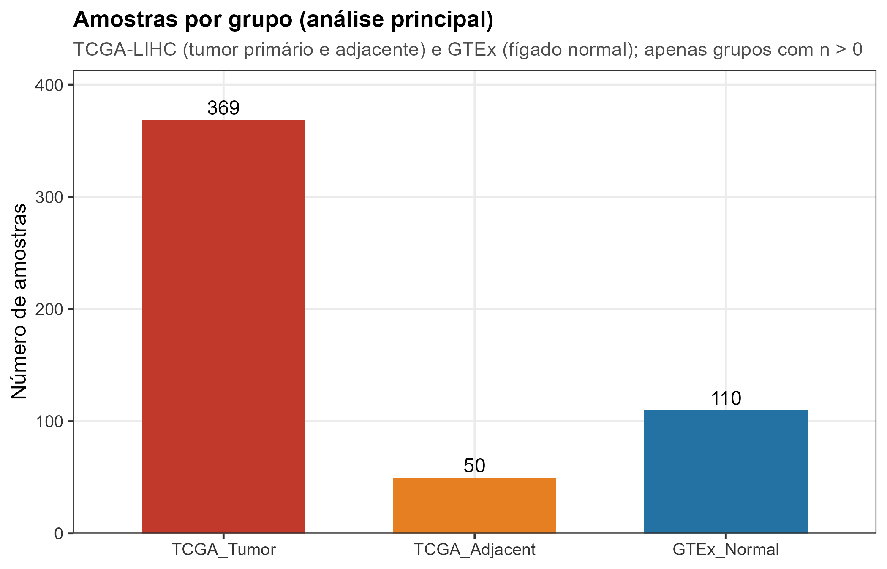
Figura 1. Distribuição das amostras hepáticas por grupo (apenas grupos com n > 0).
A versão anterior cruzava estudo × condição e exibia combinações vazias (
GTEx × Tumor = 0,TCGA × Normal = 0etc.). A figura atual conta apenas os grupos realmente observados; as 2 recidivas, excluídas da análise principal, aparecem na Figura 26 (docs/10_grupos_alternativos.md).
| Grupo | Feminino | Masculino | Total |
|---|---|---|---|
| TCGA tumor | 120 (32,5%) | 249 (67,5%) | 369 |
| TCGA adjacente | 22 (44,0%) | 28 (56,0%) | 50 |
| GTEx normal | 33 (30,0%) | 77 (70,0%) | 110 |
Testes qui-quadrado:
| Comparação | p |
|---|---|
| TCGA tumor vs. GTEx normal | 0,703 |
| TCGA tumor vs. TCGA adjacente | 0,147 |
| TCGA adjacente vs. GTEx normal | 0,121 |
Interpretação: a proporção de homens é alta em todos os grupos, mas não há diferença estatisticamente significativa entre eles. Ainda assim, sexo foi incluído como covariável nas análises de expressão diferencial, pois pode explicar parte da variância (especialmente genes ligados ao cromossomo X/Y).
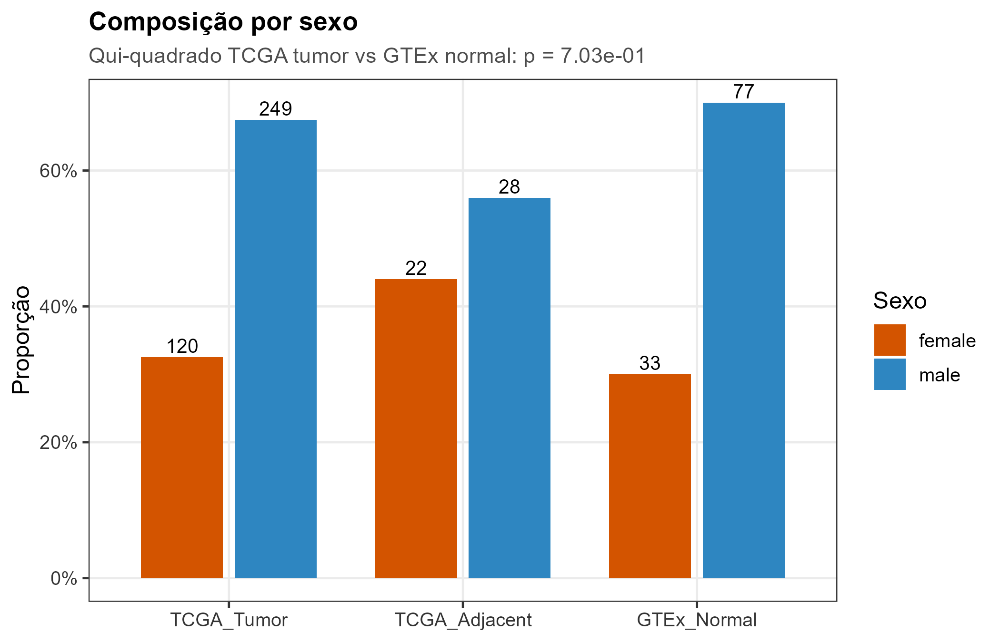
Figura 2. Composição por sexo em cada grupo.
| Grupo | n | Média ± DP | Mediana | Q1–Q3 | Mín–Máx |
|---|---|---|---|---|---|
| TCGA tumor | 368 | 59,4 ± 13,5 | 61 | 51,8–69,0 | 16–90 |
| TCGA adjacente | 50 | 61,7 ± 16,1 | 68,5 | 52,3–74,5 | 20–81 |
| GTEx normal | 110 | 53,7 ± 11,1 | 55 | 45,0–65,0 | 25–65* |
* A idade no GTEx é derivada do ponto médio da faixa etária do doador
(20-29, 30-39, …, 60-69), por isso os valores são discretizados.
Testes:
| Comparação | Teste | p |
|---|---|---|
| TCGA tumor vs. GTEx normal | Wilcoxon | 3,96 × 10⁻⁶ |
| TCGA tumor vs. TCGA adjacente | Wilcoxon | 0,0438 |
| Três grupos | Kruskal-Wallis | 8,80 × 10⁻⁷ |
Interpretação: os tumores TCGA são, em média, ~5,7 anos mais velhos que os doadores GTEx. Essa diferença é estatisticamente significativa e justifica o ajuste por idade nas comparações TCGA × GTEx. A idade também foi usada para comparações internas (≥65 vs. <65 no TCGA; ≥60 vs. <60 no GTEx).
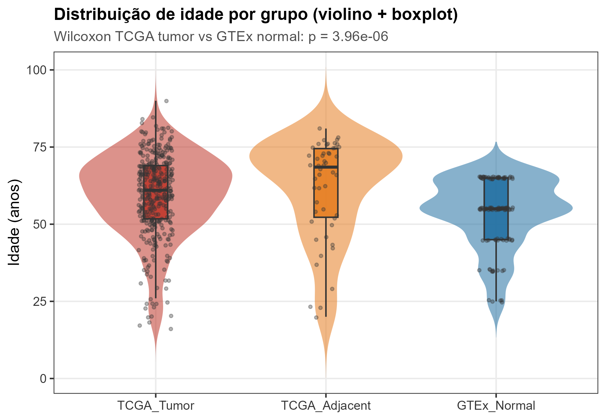
Figura 3. Distribuição de idade por grupo (violino + boxplot).
| Estágio | n | % |
|---|---|---|
| I | 169 | 45,8 |
| II | 86 | 23,3 |
| III | 85 | 23,0 |
| IV | 5 | 1,4 |
| Não informado | 24 | 6,5 |
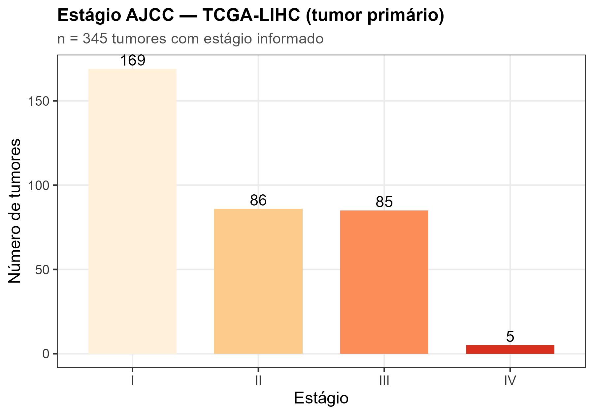
Figura 4. Estágio AJCC dos tumores primários TCGA-LIHC.
Interpretação: há predomínio de estágios iniciais (I–II = 69,1%), o que é típico de coortes cirúrgicas. O número de tumores estágio IV é pequeno (n = 5), limitando a comparação IV vs. I–III; por isso a análise de expressão agrupou III–IV vs. I–II.
| Grau | n | % |
|---|---|---|
| G1 | 55 | 14,9 |
| G2 | 177 | 48,0 |
| G3 | 121 | 32,8 |
| G4 | 11 | 3,0 |
| Não informado | 5 | 1,4 |
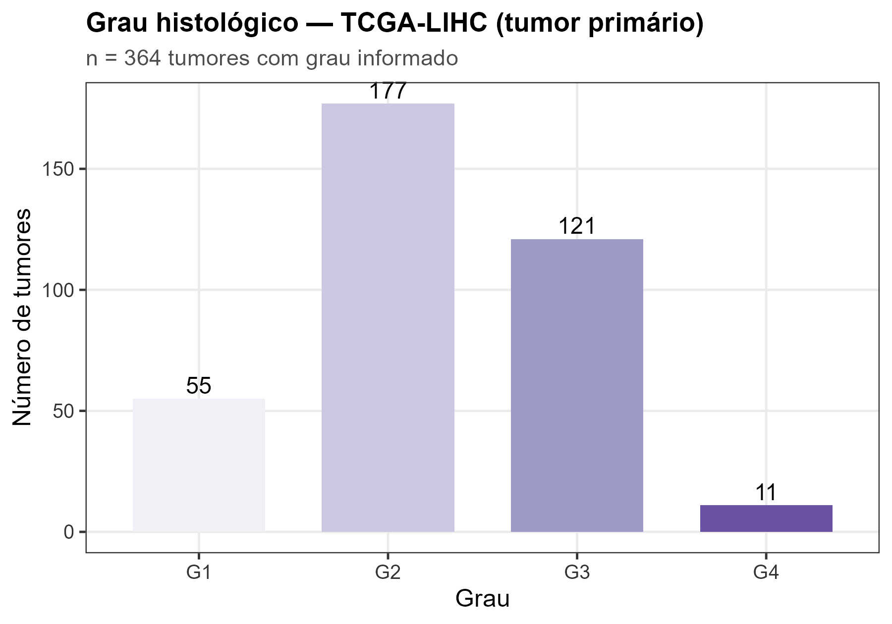
Figura 5. Grau histológico dos tumores primários TCGA-LIHC.
Interpretação: a maioria é G2–G3. Para aumentar o poder, a análise de expressão comparou G3–G4 vs. G1–G2.
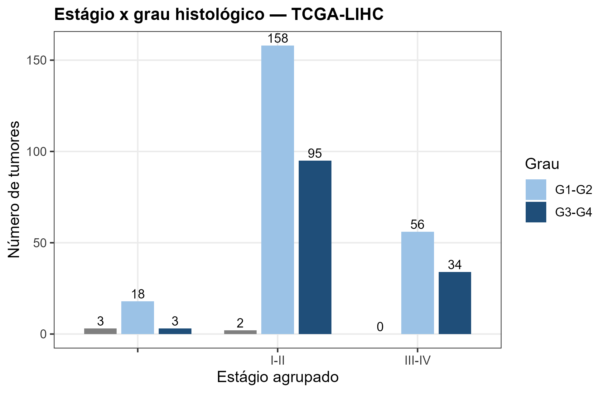
Figura 6. Distribuição conjunta de estágio agrupado e grau agrupado.
A exploração ampliada de fenótipos — missingness, AFP, fibrose, sorologia viral, Child-Pugh, histologia, invasão vascular, Kaplan-Meier e Cox — está em
docs/08_fenotipos_avancados.md.
Foi feito UMAP (Uniform Manifold Approximation and Projection) com os 2.000 genes mais variáveis, usando:
| Parâmetro | Valor |
|---|---|
| Genes | 2.000 mais variáveis |
n_neighbors |
30 |
min_dist |
0,25 |
| Métrica | cosine |
scale |
TRUE |
pca (parâmetro interno do uwot) |
50 |
| Semente | 2026 |
Diferentemente de métodos lineares de redução de dimensionalidade, o UMAP não fornece percentual de variância explicada e seus eixos não têm interpretação linear direta. Ele é usado como visualização de vizinhança e estrutura local, não como coordenada quantitativa.
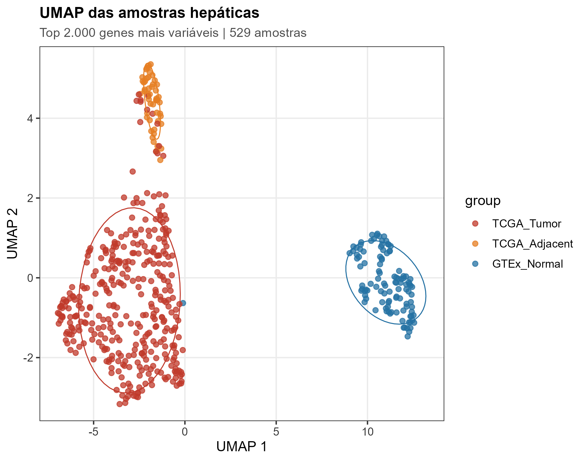
Figura 7. UMAP colorido por grupo. TCGA tumor, TCGA adjacente e GTEx normal separam-se parcialmente.
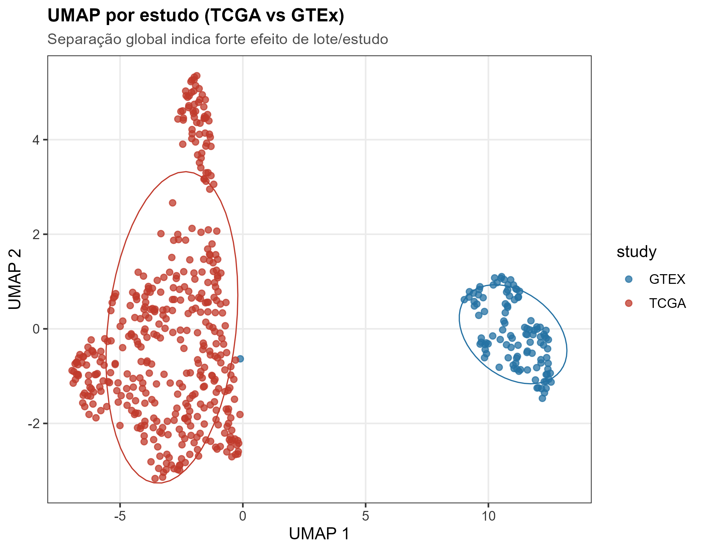
Figura 8. UMAP colorido por estudo. A separação TCGA vs. GTEx é evidente, indicando forte efeito de estudo/lote.
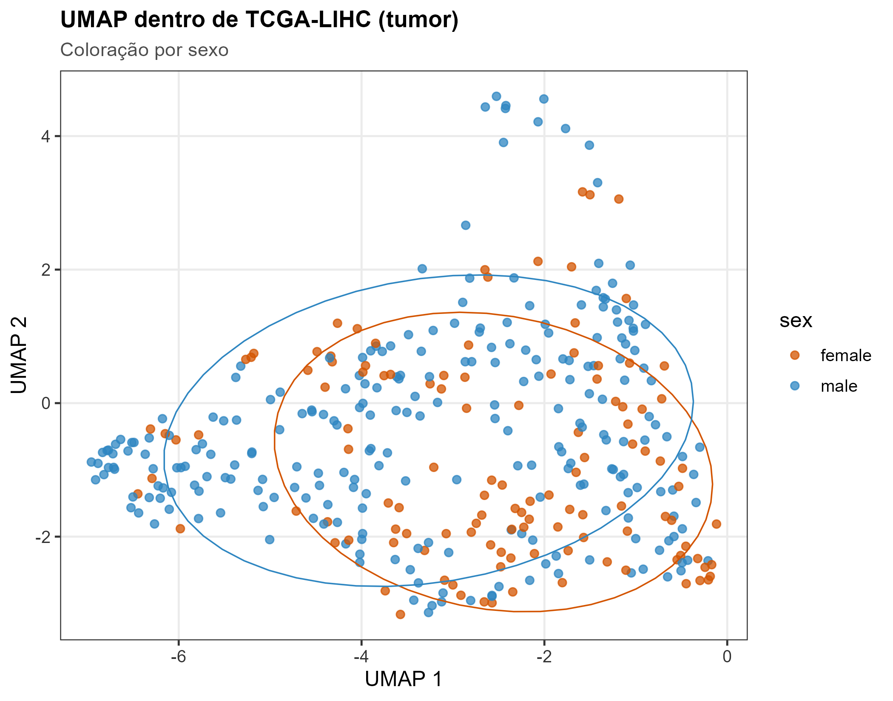
Figura 9. UMAP dentro dos tumores TCGA, colorido por sexo.
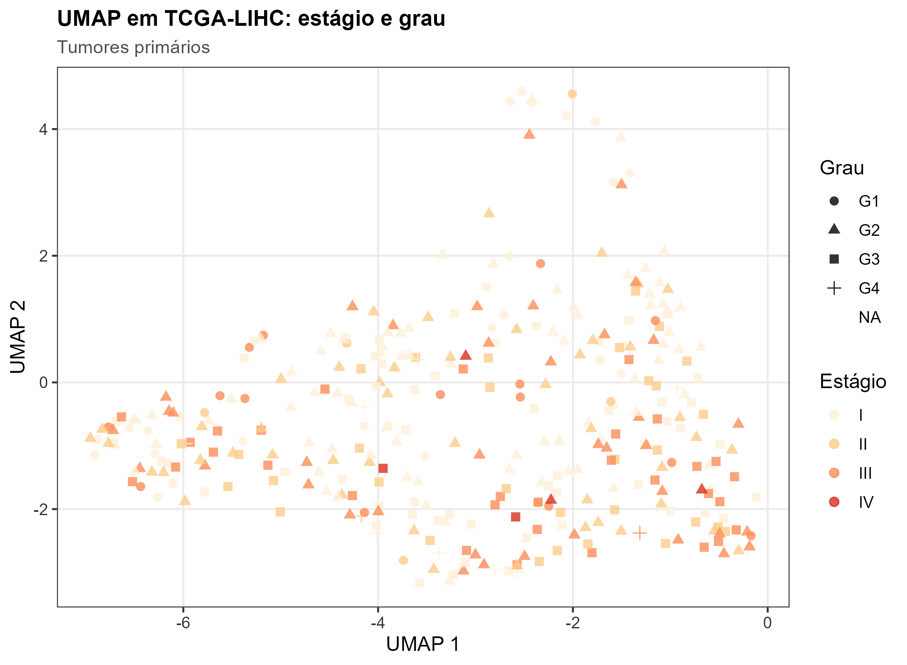
Figura 10. UMAP dos tumores TCGA, colorido por estágio e com forma por grau.
Correlações de Spearman dentro dos tumores TCGA (apenas exploratórias):
| Variável | UMAP1 (ρ) | p (UMAP1) | UMAP2 (ρ) | p (UMAP2) |
|---|---|---|---|---|
| Idade | −0,140 | 0,0073 | 0,207 | 6,5 × 10⁻⁵ |
| Estágio | 0,076 | 0,159 | −0,222 | 3,1 × 10⁻⁵ |
| Grau | 0,108 | 0,040 | −0,346 | 1,2 × 10⁻¹¹ |
Interpretação:
limma e dos modelos de
sobrevida.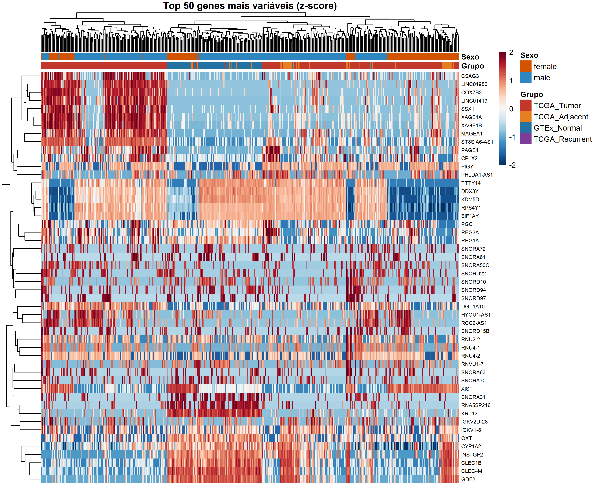
Figura 11. Heatmap dos 50 genes mais variáveis (z-score por gene). As colunas são amostras; as barras superiores indicam grupo e sexo.
Interpretação: há blocos de genes com expressão claramente distinta entre TCGA tumor e GTEx normal, e também heterogeneidade dentro dos tumores. A estrutura por grupo é consistente com o UMAP e com os resultados de expressão diferencial.
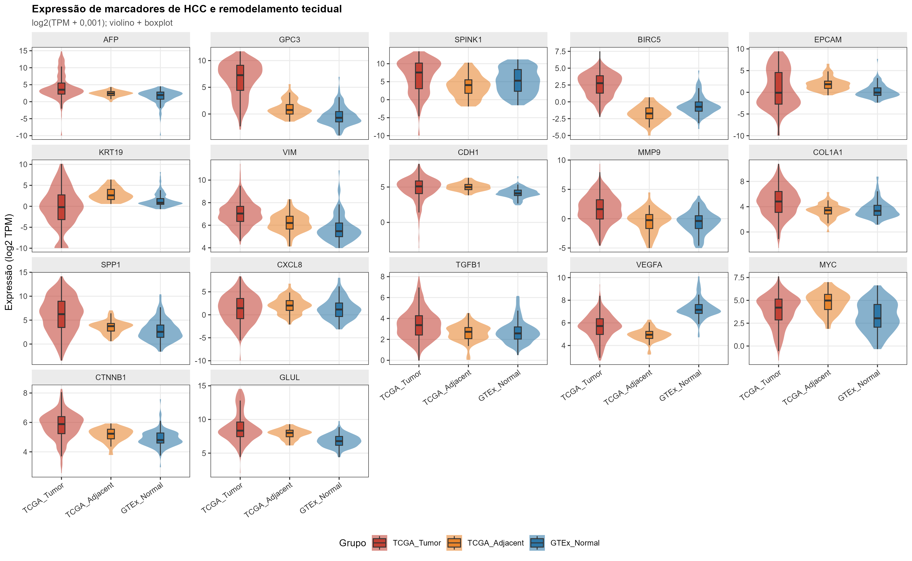
Figura 12. Expressão de marcadores selecionados nos três grupos (violino + boxplot).
Destaques:
Os valores individuais estão em
resultados/tabelas/12_expressao_marcadores.csv.
n_neighbors, min_dist) e ao efeito de lote. A separação
por estudo não deve ser interpretada como prova de diferença biológica.docs/04_volcano_plots.md).sva): o que é, como funciona e limites na deconvolução celularDocumento de apoio ao seminário. Arquivo:
docs/02_ComBat.md. Demonstração executável:scripts/04_ComBat_demonstracao.R. Resultados:resultados/tabelas/DE/COMPARACAO_ComBat_antes_depois.csv,resultados/qc/resumo_ComBat_demonstracao.txt.
O ComBat é uma função do pacote Bioconductor sva (Surrogate Variable
Analysis) voltada à correção de efeitos de lote (batch effects) em dados
de expressão gênica de alta dimensão. O nome vem de Combating Batch Effects
(“combatendo efeitos de lote”).
Um efeito de lote é uma fonte de variação técnica ou de amostragem que não interessa biologicamente, mas que altera a expressão medida. Exemplos:
Se não for tratado, o lote pode:
O ComBat tenta remover o efeito de lote preservando as diferenças biológicas que forem explicitamente informadas no modelo.
Para cada gene $g$ e cada amostra $i$, o ComBat assume um modelo aditivo e multiplicativo:
$$ y_{gi} = \alpha_g + X_i\beta_g + \gamma_{g,b(i)} + \delta_{g,b(i)}\,\varepsilon_{gi} $$
em que:
| Termo | Interpretação |
|---|---|
| $y_{gi}$ | expressão do gene $g$ na amostra $i$ (em escala logarítmica) |
| $\alpha_g$ | expressão média global do gene $g$ |
| $X_i$ | vetor de covariáveis biológicas da amostra $i$ (ex.: grupo tumoral, sexo, idade) |
| $\beta_g$ | efeitos das covariáveis biológicas no gene $g$ |
| $b(i)$ | lote ao qual a amostra $i$ pertence |
| $\gamma_{g,b(i)}$ | efeito aditivo (deslocamento da média) do lote $b$ no gene $g$ |
| $\delta_{g,b(i)}$ | efeito multiplicativo (escala/dispersão) do lote $b$ no gene $g$ |
| $\varepsilon_{gi}$ | erro residual, em geral assumido normal com média zero |
O ComBat estima, para cada gene e cada lote, os parâmetros de locação ($\gamma$) e escala ($\delta$). Em seguida, os valores são ajustados para voltar à escala comum:
$$ y^{*}{gi} = \frac{y{gi} - \hat{\alpha}g - X_i\hat{\beta}_g - \hat{\gamma}{g,b(i)}}{\hat{\delta}_{g,b(i)}} + \hat{\alpha}_g + X_i\hat{\beta}_g $$
Na prática, o ComBat implementa uma versão empírico-bayesiana: os parâmetros de cada gene não são estimados de forma totalmente independente. Assume-se uma distribuição a priori comum para os efeitos de lote e a estimativa de cada gene é “encolhida” (shrinkage) em direção a essa distribuição. Isso estabiliza as estimativas, sobretudo quando o número de amostras por lote é pequeno.
sva::ComBat(
dat = matriz_log2, # genes x amostras
batch = vetor_de_lote, # fator com o lote de cada amostra
mod = model.matrix(~ grupo + sexo + idade, data = metadados),
par.prior = TRUE, # estimação paramétrica empírico-bayesiana
mean.only = FALSE, # TRUE = corrige apenas a média (locação)
ref.batch = NULL # opcional: escolhe um lote de referência
)
dat: matriz numérica em escala logarítmica (log2 de TPM, logCPM,
intensidades normalizadas etc.). O ComBat não foi desenhado para
contagens brutas.batch: fator ou vetor que identifica o lote.mod: matriz de desenho com as variáveis biológicas que devem ser
preservadas. É o argumento mais importante para a validade da análise.par.prior = TRUE: usa prioris paramétricas (mais comum e mais rápido).
Com FALSE, usa estimação não paramétrica.mean.only = TRUE: corrige somente o deslocamento médio, sem mexer na
variância. Útil quando se quer uma correção mais conservadora.ref.batch: define um lote de referência; os demais são ajustados a ele.
Útil quando um lote é claramente o “padrão-ouro”.Existe também o ComBat-seq (pacote sva), apropriado para contagens
brutas de RNA-seq, que modela os dados com distribuição binomial negativa.
Para TPM/log2 TPM, o ComBat clássico é o mais usado.
É fundamental entender as limitações:
mod.ComBat-seq ou métodos
específicos para contagens.A demonstração está em scripts/04_ComBat_demonstracao.R. Foram usadas 478
amostras (368 tumores TCGA e 110 fígados normais GTEx) e 12.401 genes.
Foi solicitado:
mod <- model.matrix(~ group_tg, data = meta_cb) # group_tg = tumor/normal
ComBat(dat = X, batch = study, mod = mod)
Resultado:
Error: The covariate is confounded with batch! Remove the covariate and rerun ComBat
Ou seja, o próprio ComBat detecta que a condição biológica (tumor vs. normal) é perfeitamente confundida com o lote (TCGA vs. GTEx). Nesse cenário, não existe informação suficiente para estimar simultaneamente o efeito de lote e o efeito biológico.
Para fins didáticos, rodamos o ComBat sem informar a condição:
X_cor <- ComBat(dat = X, batch = study, mod = NULL)
O lote é removido, mas como a condição é indistinguível do lote, a diferença tumor-normal também é removida. Resultados:
| Métrica | Antes do ComBat | Depois do ComBat (sem covariável) |
|---|---|---|
| DEGs (FDR < 0,05 e |logFC| > 1) | 3.388 | 1 |
| Up-regulados | 2.245 | 1 |
| Down-regulados | 1.143 | 0 |
| DEGs em comum | — | 1 |
| Jaccard dos DEGs | — | 0,000 |
| Correlação de logFC (Spearman) | — | 0,647 |
Interpretação: o ComBat “funcionou” tecnicamente — removeu o lote —, mas removeu também a biologia. O resultado (1 DEG) é um exemplo de sobrecorreção (overcorrection). Isso ilustra por que não aplicamos ComBat cegamente à comparação TCGA × GTEx.
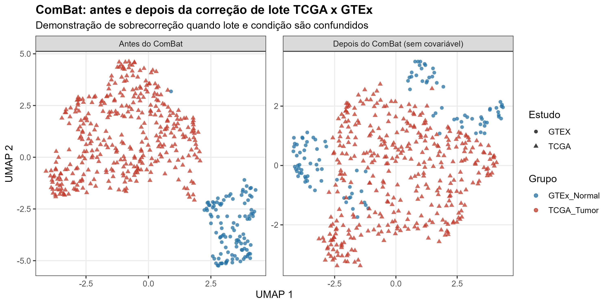
Figura 13. UMAP com os 2.000 genes mais variáveis antes e depois do ComBat sem covariável. A separação entre TCGA e GTEx desaparece, mas a diferença tumor-normal também.
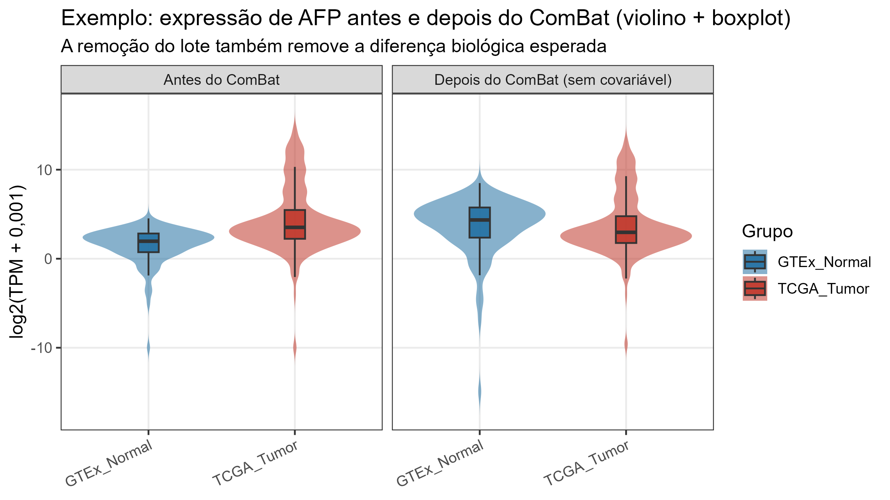
Figura 14. Exemplo com AFP (violino + boxplot): a expressão média cai e a diferença biológica esperada entre tumor e fígado normal é atenuada após a correção sem covariável.
Na análise principal (scripts/02_expressao_diferencial.R), não aplicamos
ComBat à comparação TCGA tumor × GTEx normal. Em vez disso:
limma com sexo e idade como covariáveis;Dados de expressão bulk (como TCGA e GTEx) medem a média de milhares de células. A deconvolução celular tenta estimar a proporção de cada tipo celular (hepatócitos, células imunes, fibroblastos, células endoteliais etc.) a partir dessa mistura, usando assinaturas de referência (scRNA-seq ou sorted cells). Exemplos de métodos: CIBERSORTx, MuSiC, BayesPrism, cell2location, Tangram, entre outros.
O problema é que a deconvolução é extremamente sensível a:
O ComBat pode ser aplicado antes da deconvolução para harmonizar:
Se a composição celular for conhecida ou puder ser aproximada, ela pode ser
incluída em mod para que o ComBat preserve as diferenças de composição.
Também é possível corrigir apenas a média (mean.only = TRUE) para reduzir o
risco de distorcer a variabilidade biológica.
O ComBat assume que o efeito de lote é independente da biologia. Na deconvolução, essa premissa frequentemente falha:
mod,
o ComBat pode remover justamente o sinal de composição que se quer estimar.mod quando ela for conhecida ou puder ser
estimada (por exemplo, com um método robusto inicial).mean.only = TRUE se o objetivo for apenas alinhar médias e preservar
a variabilidade.ComBat-seq ou modelos binomial negativo.O ComBat é uma ferramenta poderosa para remover efeitos técnicos quando o lote é separável da biologia e quando as covariáveis biológicas são informadas; na deconvolução celular, ele só deve ser usado com cautela, pois a composição celular é simultaneamente biologia e possível fonte de lote — e corrigir o lote sem preservar a composição pode apagar exatamente o sinal que se deseja medir.
logFC é calculado e interpretado no limmaDocumento de apoio ao seminário. Arquivo:
docs/03_logFC_limma.md. Implementação:scripts/02_expressao_diferencial.R. Resultados:resultados/tabelas/DE/.
No limma, o logFC (log fold change) é a diferença de médias na escala
logarítmica. Se a expressão já está em $\log_2(\text{TPM}+0{,}001)$, então:
$$ \text{logFC} = \overline{\log_2(\text{TPM}{\text{grupo B}})} - \overline{\log_2(\text{TPM}{\text{grupo A}})} $$
Para voltar à escala de fold change:
$$ \text{FC} = 2^{\text{logFC}} $$
Exemplos:
| logFC | FC aproximado | Interpretação |
|---|---|---|
| 0 | 1 | sem diferença |
| 0,585 | 1,5 | 50% maior no grupo B |
| 1 | 2 | 2× maior no grupo B |
| 2 | 4 | 4× maior no grupo B |
| −1 | 0,5 | metade no grupo B (2× menor) |
| −2 | 0,25 | 1/4 no grupo B |
| 6,97 | ≈125 | ≈125× maior (ex.: GPC3 no tumor) |
| −10,2 | ≈0,00085 | ≈1/1.177 (ex.: CLEC4M no tumor) |
Importante: o logFC do limma não é calculado a partir de contagens
brutas. O usuário deve fornecer uma matriz já em escala logarítmica (log2 TPM,
logCPM etc.) ou usar voom para converter contagens em logCPM com pesos. No
nosso caso, usamos log2(TPM + 0,001) do hub Toil/Xena; por isso o limma foi
aplicado diretamente, sem voom.
O limma ajusta, para cada gene separadamente, um modelo linear:
$$ \mathbf{y}_g = \mathbf{X}\boldsymbol{\beta}_g + \boldsymbol{\varepsilon}_g $$
em que:
| Símbolo | Significado |
|---|---|
| $\mathbf{y}_g$ | vetor de expressão do gene $g$ nas $n$ amostras |
| $\mathbf{X}$ | matriz de desenho (design matrix), $n \times p$ |
| $\boldsymbol{\beta}_g$ | vetor de coeficientes do gene $g$ |
| $\boldsymbol{\varepsilon}_g$ | erros, assumidos com média zero e variância $\sigma_g^2$ |
A matriz $\mathbf{X}$ codifica o grupo biológico e as covariáveis. Cada coluna é um coeficiente; cada linha é uma amostra.
Suponha o modelo:
design <- model.matrix(~ 0 + grupo + sexo + idade, data = metadados)
com grupo tendo níveis GTEx_Normal e TCGA_Tumor. As colunas serão algo
como:
(Intercept) grupoTCGA_Tumor sexomale idade
Mas, com ~ 0 + grupo, o Intercept é removido e as colunas ficam:
grupoGTEx_Normal grupoTCGA_Tumor sexomale idade
Nesse caso, grupoGTEx_Normal e grupoTCGA_Tumor são as médias ajustadas
de cada grupo (ajustadas por sexo e idade), e os coeficientes de sexo e idade
representam seus efeitos comuns aos dois grupos.
O logFC do contraste tumor − normal é:
$$ \widehat{\text{logFC}} = \hat{\beta}{\text{grupoTCGA_Tumor}} - \hat{\beta}{\text{grupoGTEx_Normal}} $$
Isso é feito pela matriz de contraste $\mathbf{c}$:
$$ \widehat{\text{logFC}} = \mathbf{c}^\top \hat{\boldsymbol{\beta}}_g $$
No nosso código, o vetor cvec tem -1 no coeficiente do grupo de referência
e +1 no coeficiente do grupo de interesse. A função contrasts.fit() aplica
esse contraste a todos os genes de uma vez.
makeContrastsO jeito mais explícito de fazer o mesmo é:
design <- model.matrix(~ 0 + grupo + sexo + idade, data = metadados)
colnames(design) <- c("GTEx_Normal", "TCGA_Tumor", "sexo_male", "idade")
fit <- lmFit(expr, design)
contr <- makeContrasts(
TCGA_Tumor - GTEx_Normal,
levels = design
)
fit2 <- contrasts.fit(fit, contr)
fit2 <- eBayes(fit2, trend = TRUE, robust = TRUE)
tt <- topTable(
fit2,
coef = 1,
number = Inf,
sort.by = "P",
adjust.method = "BH"
)
O resultado é o mesmo: um logFC por gene, já ajustado pelas covariáveis.
Sem covariáveis, o logFC é simplesmente a diferença das médias amostrais
entre os dois grupos. Com covariáveis, ele é a diferença das médias
ajustadas pelo modelo. Isso é importante quando:
No nosso caso, a comparação TCGA tumor × GTEx normal ajusta por sexo e idade, porque:
Ainda assim, o ajuste por covariáveis não corrige o confundimento estrutural entre estudo (TCGA vs. GTEx) e condição (tumor vs. normal). Ele apenas remove parte da variação explicada por sexo e idade.
No TCGA, 50 pacientes têm tumor e tecido adjacente. Nesse caso, podemos usar o paciente como fator de bloqueio:
design <- model.matrix(~ 0 + grupo + paciente)
Cada paciente tem duas amostras; o modelo estima um efeito fixo por paciente e o contraste tumor − adjacente é calculado dentro de cada paciente. Isso remove a variabilidade entre pacientes (idade, sexo, genética, etc.) e geralmente aumenta o poder estatístico.
No nosso código, a análise pareada é a comparação
TCGA_Tumor_vs_Adjacent_PAREADO. Ela produziu 2.934 genes up e 776 down
(vs. 3.322 up e 808 down na análise não pareada), confirmando que a maior parte
do sinal é robusta.
lmFit, eBayes e topTablelmFitlmFit(expr, design) ajusta o modelo linear para cada gene. Ele retorna:
eBayeseBayes() implementa o moderated t-statistic do limma. Em vez de estimar a
variância de cada gene isoladamente (o que é instável com poucas amostras), o
limma combina a variância do gene com uma variância a priori estimada a
partir de todos os genes. Isso “modera” os testes e aumenta o poder.
trend = TRUE: a variância a priori pode depender da expressão média
(genes de baixa expressão costumam ter maior variância).robust = TRUE: reduz a influência de genes outliers na estimativa da
variância a priori.topTabletopTable() monta a tabela final. As colunas são:
| Coluna | Significado |
|---|---|
logFC |
log2 fold change do contraste (grupo B − grupo A, conforme o contraste) |
AveExpr |
expressão média do gene no conjunto de amostras analisado (log2) |
t |
estatística t moderada do contraste |
P.Value |
p-valor nominal (não ajustado) |
adj.P.Val |
p-valor ajustado por múltiplas comparações (BH, no nosso caso) |
B |
log-odds de o gene estar diferencialmente expresso (evidência Bayesiana) |
Argumentos usados:
topTable(
fit2,
coef = 1, # qual contraste usar
number = Inf, # retornar todos os genes
sort.by = "P", # ordenar pelo p-valor
adjust.method = "BH" # Benjamini-Hochberg
)
No nosso código, também adicionamos as colunas gene, comparison,
direction e regulation (Up/Down/NS).
O sinal do logFC depende de como o contraste foi definido. No nosso script:
levels = c("GTEx_Normal", "TCGA_Tumor")
cvec["groupGTEx_Normal"] <- -1
cvec["groupTCGA_Tumor"] <- 1
Portanto:
logFC > 0 → expressão maior em TCGA tumor do que em GTEx normal;logFC < 0 → expressão maior em GTEx normal (menor no tumor).Para a comparação tumor vs. adjacente:
levels = c("Adjacent", "Tumor")
cvec["groupAdjacent"] <- -1
cvec["groupTumor"] <- 1
logFC > 0 → maior no tumor;logFC < 0 → maior no tecido adjacente.Sempre confira a coluna direction ou o subtítulo do volcano plot para não
inverter a interpretação.
gene logFC adj.P.Val regulation
GPC3 6,969 1,24e-70 Up
AFP 2,852 3,23e-13 Up
CLEC4M -10,201 7,73e-93 Down
XIST -9,273 7,53e-50 Down
logFC a partir de TPM não transformado. O limma espera
escala log; se você passar TPM bruto, o logFC será uma diferença de TPM,
não um log-razão. Use log2(TPM + pequeno offset) ou voom.logFC com fold change. logFC = 1 é 2×, não 1×.logFC positivo/negativo depende de qual
grupo está no numerador.adj.P.Val (BH) e reporte o critério.logFC. Expressão diferencial é
associação, não prova de causalidade.logFC grande entre TCGA e GTEx
pode refletir biologia, lote ou ambos.logFC do limma é a diferença de médias na escala log2, obtida a partir
de um modelo linear por gene.eBayes modera a variância e aumenta o poder; topTable resume os
resultados.2^logFC converte o logFC em fold change.Arquivo:
docs/04_volcano_plots.md. Script:scripts/03_volcano_plots.R. Figuras:resultados/figuras/Volcano_*.png(somente PNG). Tabelas:resultados/tabelas/DE/eresultados/tabelas/ROTULOS_Volcano_*.csv.
O volcano plot combina duas informações de cada gene:
logFC — magnitude e direção da diferença de expressão.−log10(FDR) — significância estatística ajustada para
múltiplos testes. Quanto mais alto, menor o FDR.Cada ponto é um gene. A forma de “vulcão” aparece porque genes com logFC
grande tendem a ter p-valores pequenos, mas genes com logFC pequeno podem ser
muito significativos se a variância for baixa.
| Região | Interpretação |
|---|---|
| Direita superior | up-regulado e significativo |
| Esquerda superior | down-regulado e significativo |
| Centro (baixo) | sem evidência de diferença |
| Laterais inferiores | logFC grande, mas não significativo (alta variância/poucas amostras) |
O critério |logFC| > 1 é uma escolha pragmática para priorizar efeitos biologicamente relevantes. Ele não é obrigatório; genes com |logFC| < 1 podem ser significativos e devem ser consultados nas tabelas completas.
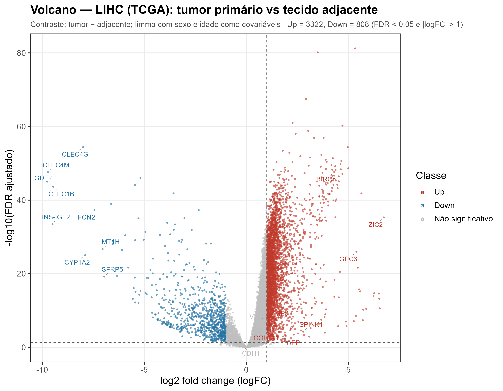
Figura V1. Volcano plot da comparação interna no TCGA: 369 tumores primários
vs. 50 tecidos adjacentes. Modelo limma com sexo e idade como covariáveis.
Resultado: 3.322 genes up e 808 genes down no tumor (FDR < 0,05 e |logFC| > 1).
Genes up de destaque: GABRD, PLVAP, DIPK2B, TOMM40L, HIGD1B, SLC26A6, MSTO1, UBE2T, MXD3, CDC25C, BIRC5, GPC3, MMP9.
Genes down de destaque: CLEC4G, CLEC4M, FCN3, GDF2, CRHBP, CLEC1B, CFP, MARCO, FCN2, ADAMTS13, CYP1A2, MT1H, SFRP5.
Interpretação biológica:
Por que essa é a comparação interna mais valiosa? Tumor e adjacente vêm do mesmo estudo (TCGA), do mesmo paciente em 50 casos, e foram processados no mesmo pipeline. Isso reduz o confundimento de lote, embora o adjacente possa já apresentar alterações de campo de cancerização.
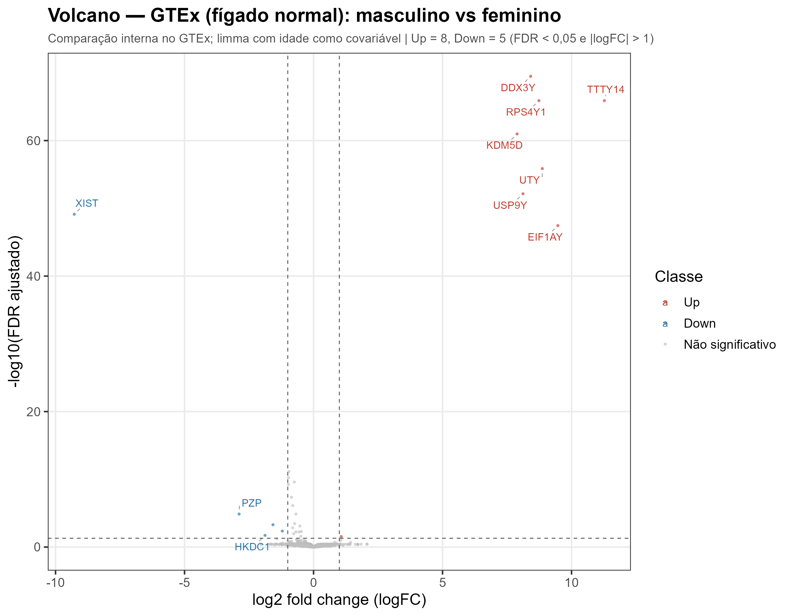
Figura V2. Volcano plot da comparação interna no GTEx (110 fígados normais):
77 homens vs. 33 mulheres. Modelo limma com idade como covariável.
Resultado: 8 genes up e 5 genes down no sexo masculino (FDR < 0,05 e |logFC| > 1).
Genes up em homens: DDX3Y, TTTY14, RPS4Y1, KDM5D, UTY, USP9Y, EIF1AY, TSPAN8.
Genes down em homens: XIST, PZP, VIL1.
Interpretação:
logFC negativo em homens é o esperado.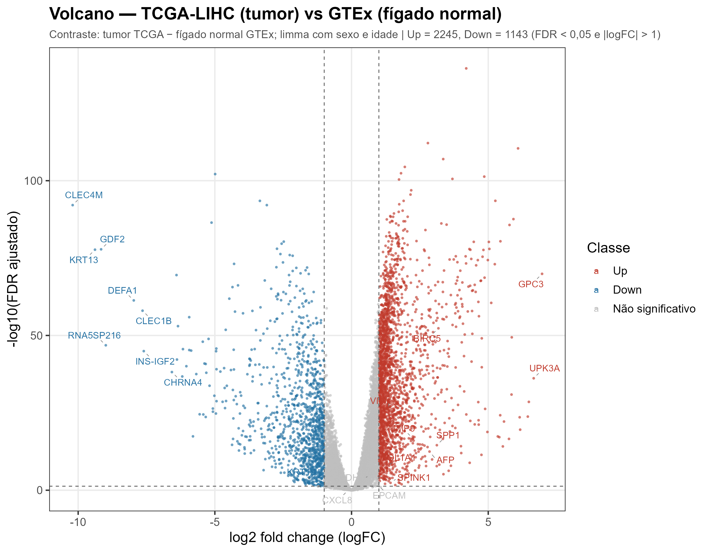
Figura V3. Volcano plot da comparação entre estudos: 369 tumores TCGA vs.
110 fígados normais GTEx. Modelo limma com sexo e idade como covariáveis.
Resultado: 2.245 genes up e 1.143 genes down no tumor (FDR < 0,05 e |logFC| > 1).
Genes up de destaque: PLVAP, GBA1, RPL17P36, CD34, SEM1, PRPF6, GABRD, LMNA, MDK, GPC3, BIRC5, VIM, MMP9, SPP1.
Genes down de destaque: PRSS53, CHRD, CLEC4M, ADAMTS13, RIPOR3, DNHD1, NPIPB12, NPIPB5, GDF2, KRT13, CLEC1B, INS-IGF2, CYP1A2.
Interpretação biológica:
logFC muito negativo/positivo; alguns
desses genes podem refletir diferenças de composição tecidual ou de
processamento entre TCGA e GTEx.Cuidado crucial: essa comparação é confundida com o estudo. Todo tumor
é TCGA; todo normal é GTEx. Portanto, o logFC estimado combina:
A comparação TCGA adjacente vs. GTEx normal ajuda a estimar o componente não tumoral: foram 584 up e 1.966 down (20,6% dos genes), mostrando que os “normais” dos dois estudos já diferem substancialmente. Isso não invalida a comparação tumor vs. normal, mas exige moderação na interpretação dos efeitos absolutos.
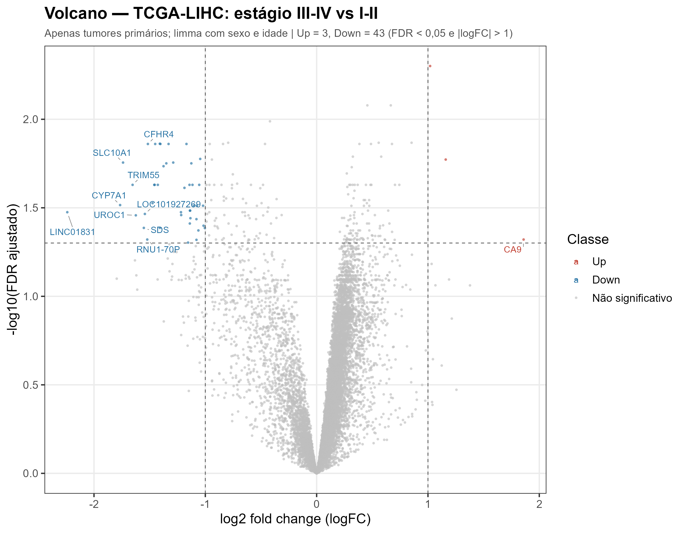
Resultado: 3 up e 43 down (FDR < 0,05 e |logFC| > 1).
Interpretação: tumores mais avançados perdem genes de metabolismo hepático/diferenciação (GNMT, CYP2C9, ACOT12, FTCD, HPX, SLC10A1) e ganham genes de hipóxia (CA9, MIR210HG). O número pequeno de DEGs reflete o tamanho amostral e a heterogeneidade; ainda assim, o padrão é biologicamente coerente.
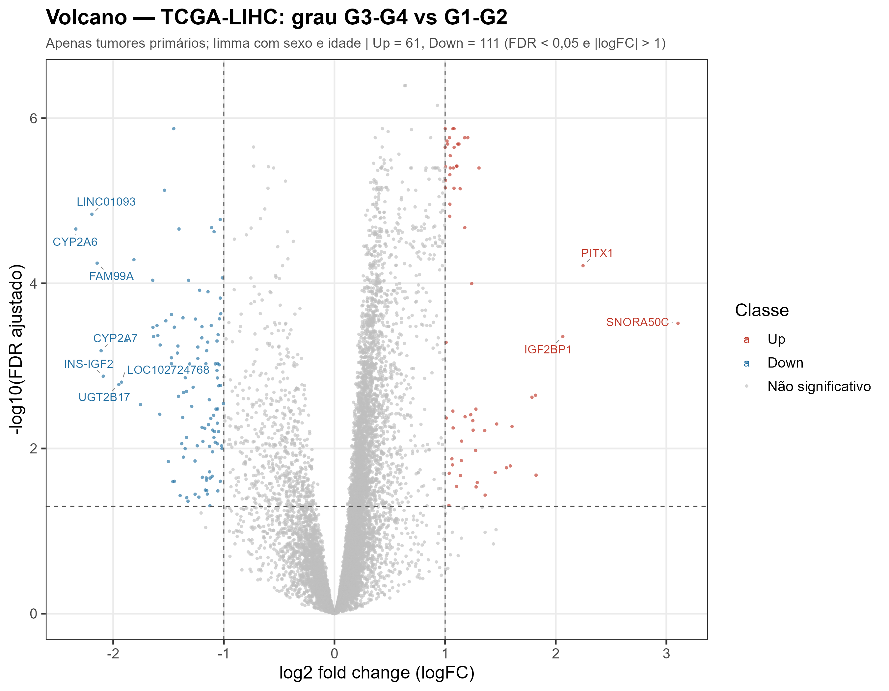
Resultado: 61 up e 111 down (FDR < 0,05 e |logFC| > 1).
Interpretação: tumores de alto grau têm forte assinatura de ciclo celular/mitose (AURKB, CCNB1, CDC20, NUF2, KIF2C) e perda de genes de metabolismo/diferenciação. É um dos achados mais consistentes do ponto de vista biológico.
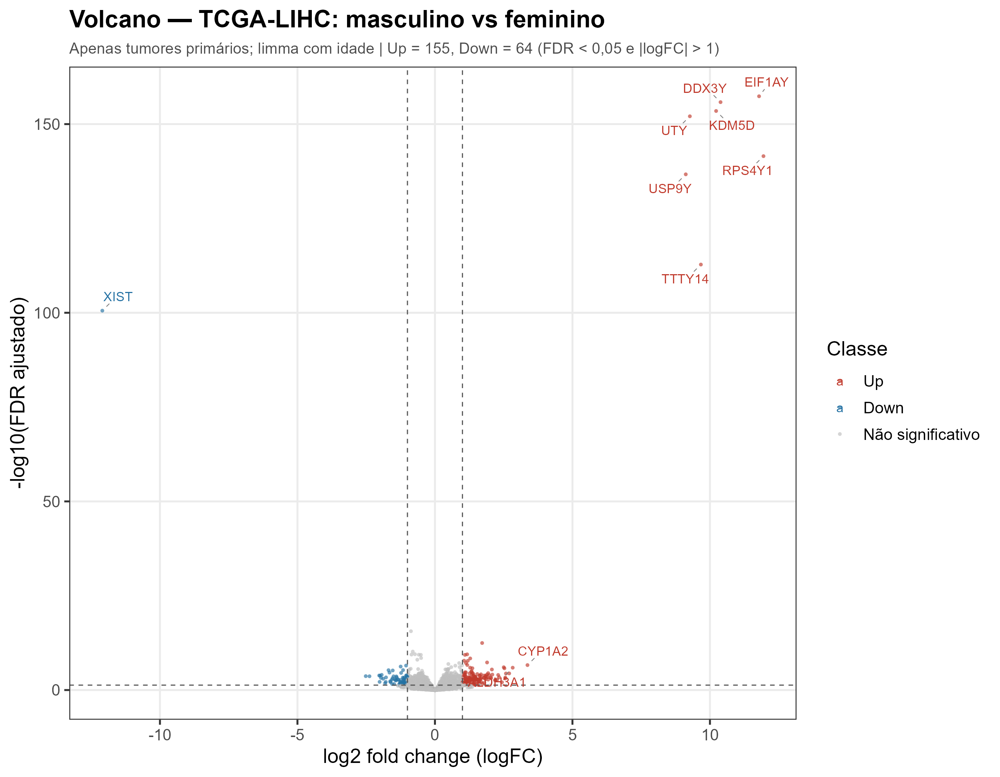
Resultado: 155 up e 64 down.
Esse resultado é um controle positivo e mostra que a comparação de sexo funciona mesmo dentro do tumor.
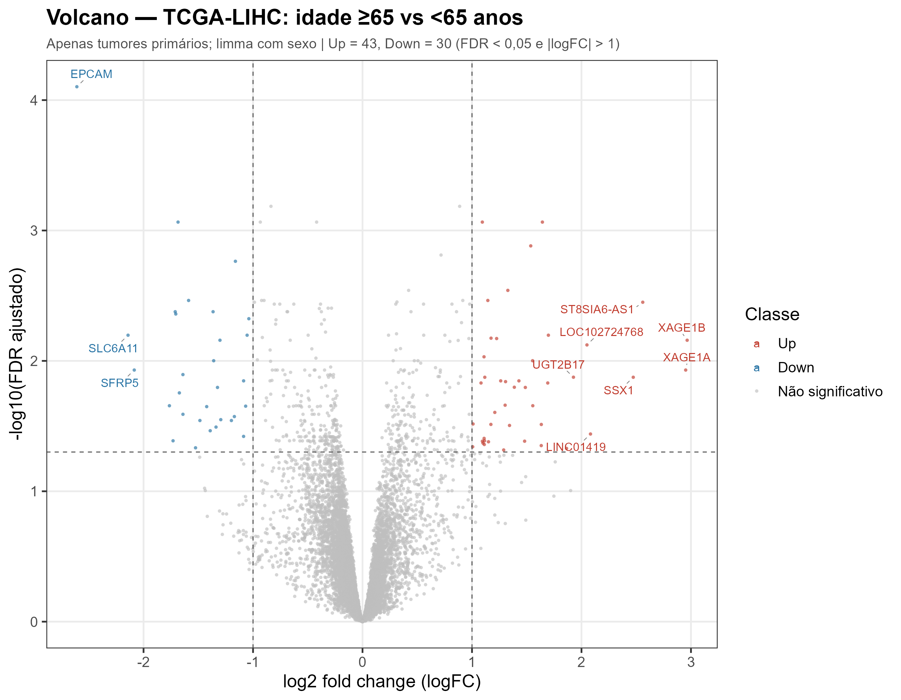
Resultado: 43 up e 30 down. Efeito modesto; genes como LRRC37A7P, MFAP3L, CES5A, SLC28A1, ALDH1L1 aparecem entre os mais significativos. A interpretação é limitada pela natureza observacional e pela correlação entre idade e outras variáveis clínicas.
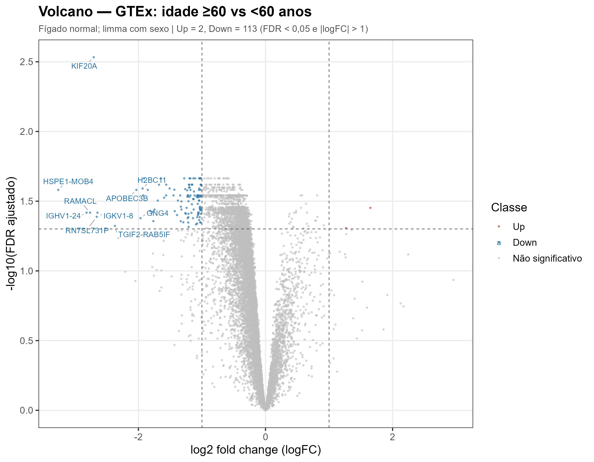
Resultado: 2 up e 113 down. A maioria dos genes down em ≥60 está ligada a ciclo celular/proliferação (KIF20A, TOP2A, RRM2) e endotélio (CD93, ECSCR). Como o fígado adulto tem baixa proliferação, esse sinal pode refletir diferenças de composição ou de viabilidade celular, e não necessariamente envelhecimento hepático.
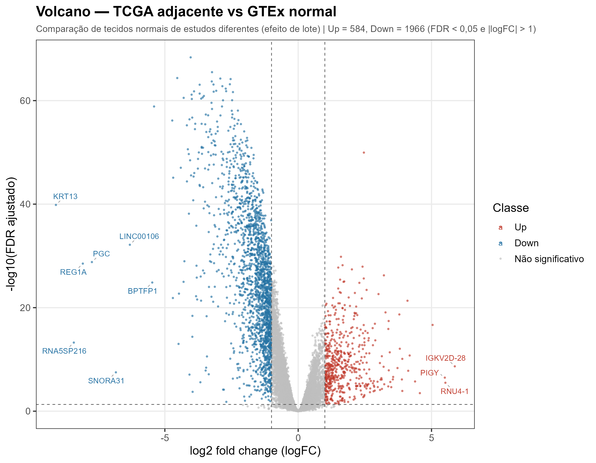
Resultado: 584 up e 1.966 down. É a comparação que mais evidencia o efeito de estudo/lote em tecidos “normais”. Genes up no adjacente incluem APOC2, IGF2, AMBP, CFP, FUCA1, ITIH2, CETP; genes down incluem CHRD, CCNL2, CLASRP, SNRNP70, SLC17A9.
Interpretação: não se deve assumir que “adjacente TCGA” e “GTEx normal” são intercambiáveis. O adjacente pode ter alterações de campo de cancerização, inflamação e composição celular diferente; além disso, há diferenças de processamento entre os estudos.
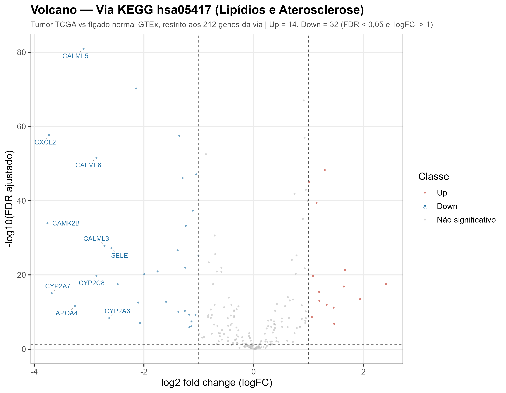
Resultado: 14 up e 32 down entre os 213 genes da via.
Interpretação: a via de lipídios e aterosclerose está remodelada no HCC, com ativação de componentes inflamatórios/oxidativos (PYCARD, LY96, VCAM1, NOX1, MMP1/MMP9) e alteração de receptores de lipídios (CD36, ABCG1, PPARG). A interpretação é limitada pelo pequeno número de genes da via e pelo confundimento TCGA × GTEx.
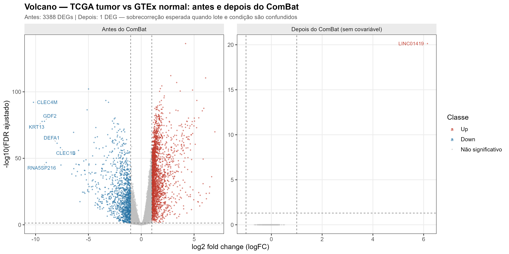
Resultado: a figura agora é um painel duplo: antes do ComBat (3.388 DEGs) e depois do ComBat (1 DEG, LINC01419). A versão original, com apenas o painel “depois”, parecia vazia.
Auditoria: a figura original não estava tecnicamente em branco — tinha ≈3,65% de pixels não brancos (eixos, título e poucos pontos), mas 12.400 dos 12.401 genes ficaram amontoados perto da origem. A causa era científica: o ComBat sem covariável removeu também a diferença tumor-normal, pois lote e condição são perfeitamente confundidos. A versão corrigida tem ≈9,48% de pixels não brancos e comunica explicitamente a sobrecorreção.
Interpretação: não é um resultado biológico; é uma demonstração de
sobrecorreção. Veja docs/02_ComBat.md e
auditorias/AUDITORIA_VOLCANO_12.md para a explicação completa.
Fluxo resumido:
limma para cada comparação:
r
design <- model.matrix(~ 0 + grupo + sexo + idade, data = metadados)
fit <- lmFit(expr, design)
fit2 <- contrasts.fit(fit, contraste)
fit2 <- eBayes(fit2, trend = TRUE, robust = TRUE)
tt <- topTable(fit2, coef = 1, number = Inf, adjust.method = "BH")r
regulation <- ifelse(adj.P.Val < 0.05 & logFC > 1, "Up",
ifelse(adj.P.Val < 0.05 & logFC < -1, "Down", "NS"))r
ggplot(tt, aes(x = logFC, y = -log10(adj.P.Val), colour = regulation)) +
geom_point() +
geom_vline(xintercept = c(-1, 1), linetype = "dashed") +
geom_hline(yintercept = -log10(0.05), linetype = "dashed") +
geom_text_repel(data = rotulos, aes(label = gene))Com 12.401 genes, usar o p-valor nominal geraria muitos falsos positivos. O
FDR (BH) controla a proporção esperada de falsos positivos entre os genes
chamados de significativos. No volcano, −log10(FDR) torna a significância
visualmente comparável entre comparações.
O rótulo é limitado aos 10 DEGs com maior |logFC| + genes de interesse. Genes
com |logFC| menor, mas ainda significativos (por exemplo, AFP na comparação
tumor vs. adjacente), podem estar no gráfico sem rótulo. Consulte as tabelas
completas em resultados/tabelas/DE/.
| Comparação | n testados | Up | Down | Total | % significativos |
|---|---|---|---|---|---|
| TCGA tumor vs. TCGA adjacente | 12.401 | 3.322 | 808 | 4.130 | 33,3 |
| TCGA tumor vs. adjacente (pareado) | 12.401 | 2.934 | 776 | 3.710 | 29,9 |
| TCGA tumor vs. GTEx normal | 12.401 | 2.245 | 1.143 | 3.388 | 27,3 |
| TCGA adjacente vs. GTEx normal | 12.401 | 584 | 1.966 | 2.550 | 20,6 |
| TCGA masculino vs. feminino | 12.401 | 155 | 64 | 219 | 1,8 |
| TCGA G3–G4 vs. G1–G2 | 12.401 | 61 | 111 | 172 | 1,4 |
| GTEx ≥60 vs. <60 | 12.401 | 2 | 113 | 115 | 0,9 |
| TCGA ≥65 vs. <65 | 12.401 | 43 | 30 | 73 | 0,6 |
| TCGA estágio III–IV vs. I–II | 12.401 | 3 | 43 | 46 | 0,4 |
| Via LA: TCGA tumor vs. GTEx | 213 | 14 | 32 | 46 | 21,6 |
| Via LA: TCGA tumor vs. adjacente | 213 | 11 | 33 | 44 | 20,7 |
| GTEx masculino vs. feminino | 12.401 | 8 | 5 | 13 | 0,1 |
Critério: FDR < 0,05 e |logFC| > 1.
logFC instável; o filtro de
expressão ajuda, mas não elimina o problema.Documento de síntese. Arquivos de apoio:
README.md,docs/01_analise_exploratoria.md,docs/02_ComBat.md,docs/03_logFC_limma.md,docs/04_volcano_plots.md.
Foram analisados 529 amostras de fígado:
A expressão gênica foi obtida do hub Toil do UCSC Xena (log2 TPM + 0,001), mapeada para símbolos HUGO e filtrada para 12.401 genes expressos. O painel da via KEGG hsa05417 (Lipid and Atherosclerosis) foi analisado separadamente (213 genes).
| Objetivo | Como foi atendido | Onde ver |
|---|---|---|
| Análise exploratória e clínica | Tabelas e figuras de sexo, idade, estágio, grau, UMAP, heatmap e marcadores | docs/01_analise_exploratoria.md; resultados/tabelas/01–12; resultados/figuras/01–12 |
| Fenótipos avançados | Missingness, associações, AFP, fibrose, vírus, Kaplan-Meier, Cox e cox.zph |
docs/08_fenotipos_avancados.md; scripts/05_fenotipos_avancados.R; resultados/tabelas/13–20 |
| Auditorias, benchmarks e compliance | Auditoria de dados e do Volcano_12, benchmarks e checklist | auditorias/ |
| TCGA vs. TCGA | Tumor vs. adjacente (não pareado e pareado); subgrupos de estágio, grau, sexo e idade | resultados/tabelas/DE/; docs/04_volcano_plots.md |
| GTEx vs. GTEx | Masculino vs. feminino; idade ≥60 vs. <60 | resultados/tabelas/DE/; docs/04_volcano_plots.md |
| TCGA vs. GTEx | Tumor vs. fígado normal; adjacente vs. GTEx normal; via LA | resultados/tabelas/DE/; docs/04_volcano_plots.md |
| Explicação do ComBat | Modelo, funcionamento, aplicação e limitação na deconvolução | docs/02_ComBat.md; scripts/04_ComBat_demonstracao.R |
| Cálculo do logFC no limma | Modelo linear, desenho, contrastes, topTable, exemplos |
docs/03_logFC_limma.md |
| Volcano plots | Três principais + complementares | resultados/figuras/Volcano_*.png; docs/04_volcano_plots.md |
| Organização | Pasta seminários_ryan/ com scripts, dados processados, resultados e docs |
Este repositório |
LIHC_clinicalMatrix.-02), por não representarem
tumor primário.org.Hs.eg.db), isoformas agregadas
pela média.limma (Ritchie et al., 2015).~ 0 + grupo + sexo + idade (quando aplicável).~ 0 + grupo + paciente.eBayes(trend = TRUE, robust = TRUE).logFC em log2; fold change = 2^logFC.sva (Johnson et al., 2007; Leek et al., 2012).mod = ~ grupo → erro de confundimento.mod = NULL → sobrecorreção.ggplot2, ggrepel, pheatmap.| Variável | TCGA tumor | TCGA adjacente | GTEx normal |
|---|---|---|---|
| n | 369 | 50 | 110 |
| Sexo feminino/masculino | 120/249 | 22/28 | 33/77 |
| Idade (média ± DP) | 59,4 ± 13,5 | 61,7 ± 16,1 | 53,7 ± 11,1 |
| Estágio I/II/III/IV | 169/86/85/5 | — | — |
| Grau G1/G2/G3/G4 | 55/177/121/11 | — | — |
Missingness (TCGA tumor): invasão vascular 70,7%, sorologia viral 55,8%, fibrose 43,1%, Child-Pugh 35,8%, AFP 25,2%, estágio 6,5%, grau 1,4% e idade 0,3%.
Associações com p ajustado (BH) < 0,05:
| Associação | p | V de Cramér |
|---|---|---|
| Child-Pugh × estágio | 5,5 × 10⁻⁸ | 0,293 |
| log2(AFP+1) × grau (Wilcoxon) | 4,3 × 10⁻⁶ | — |
| AFP ≥400 × grau | 2,0 × 10⁻⁵ | 0,257 |
| Raça × grau | 1,0 × 10⁻⁴ | 0,251 |
| Idade × grau | 4,9 × 10⁻³ | — |
| log2(AFP+1) × sexo | 5,4 × 10⁻³ | — |
| Fibrose Ishak × estágio | 6,7 × 10⁻³ | — |
| Vírus × grau | 1,1 × 10⁻² | 0,236 |
| AFP ≥400 × estágio | 1,4 × 10⁻² | 0,152 |
| Fibrose avançada × estágio | 1,4 × 10⁻² | 0,174 |
| Vírus × estágio | 1,4 × 10⁻² | 0,233 |
Para vírus e raça, a categoria Unknown foi excluída dos testes.
AFP (medianas): estágio I–II = 12 vs. III–IV = 34,5; grau G1–G2 = 7 vs. G3–G4 = 48; mulheres = 28 vs. homens = 11. A média é inflada por outliers; por isso usamos mediana e log2(AFP+1).
Sobrevida global (Kaplan-Meier): apenas estágio foi significativo (log-rank p = 5,18 × 10⁻⁷; n = 339; 114 eventos). Grau (p = 0,682), sexo (p = 0,288), idade (p = 0,244), AFP ≥400 (p = 0,941) e fibrose avançada (p = 0,428) não atingiram significância. Veja as figuras 17–23.
Cox multivariado:
| Modelo | Variável | HR (IC 95%) | p |
|---|---|---|---|
| A (n = 337; 112 eventos) | Estágio III–IV vs. I–II | 2,61 (1,79–3,81) | 6,0 × 10⁻⁷ |
| A | Grau G3–G4 vs. G1–G2 | 1,16 (0,79–1,71) | 0,450 |
| A | Sexo masculino vs. feminino | 0,88 (0,59–1,29) | 0,508 |
| A | Idade (por ano) | 1,01 (0,996–1,03) | 0,155 |
| B (n = 179; 52 eventos) | Estágio III–IV vs. I–II | 2,23 (1,24–4,03) | 7,7 × 10⁻³ |
| B | Idade (por ano) | 1,03 (1,006–1,058) | 0,0165 |
| B | AFP ≥400 vs. <400 | 1,04 (0,51–2,12) | 0,907 |
| B | Fibrose avançada vs. não | 1,16 (0,62–2,17) | 0,645 |
A suposição de riscos proporcionais foi globalmente satisfeita
(cox.zph: p = 0,386 no Modelo A e p = 0,153 no Modelo B); AFP no Modelo B
ficou no limite (p = 0,049).
Correlações de Spearman: AFP × grau (ρ = 0,292; p = 8,6 × 10⁻⁷), AFP × estágio (ρ = 0,162; p = 0,0083), fibrose × estágio (ρ = −0,205; p = 0,0038), idade × grau (ρ = −0,131; p = 0,0126) e idade × estágio (ρ = −0,122; p = 0,0235).
Interpretação: o estágio é o fator prognóstico dominante; o grau perde significância após ajuste pelo estágio. AFP se associa mais a grau do que a estágio. A missingness elevada de AFP, fibrose, sorologia e invasão vascular reduz o poder dos modelos B e das curvas correspondentes; esses resultados são exploratórios.
Outros grupos nos dados: além de tumor/adjacente/GTEx, há 2 recidivas
(excluídas), 7 hepatocolangiocarcinomas mistos, 3 carcinomas fibrolamelares,
grupos virais (HBV/HCV/HBV+HCV) e 38 centros TCGA. Ver
docs/10_grupos_alternativos.md.
Tabela completa em resultados/tabelas/DE/RESUMO_DEGs_TODAS_COMPARACOES.csv.
| Comparação | Up | Down | Total |
|---|---|---|---|
| TCGA tumor vs. adjacente | 3.322 | 808 | 4.130 |
| TCGA tumor vs. adjacente (pareado) | 2.934 | 776 | 3.710 |
| TCGA tumor vs. GTEx normal | 2.245 | 1.143 | 3.388 |
| TCGA adjacente vs. GTEx normal | 584 | 1.966 | 2.550 |
| TCGA masculino vs. feminino | 155 | 64 | 219 |
| TCGA G3–G4 vs. G1–G2 | 61 | 111 | 172 |
| GTEx ≥60 vs. <60 | 2 | 113 | 115 |
| TCGA ≥65 vs. <65 | 43 | 30 | 73 |
| TCGA estágio III–IV vs. I–II | 3 | 43 | 46 |
| Via LA: TCGA tumor vs. GTEx | 14 | 32 | 46 |
| Via LA: TCGA tumor vs. adjacente | 11 | 33 | 44 |
| GTEx masculino vs. feminino | 8 | 5 | 13 |
auditorias/AUDITORIA_DADOS.md.auditorias/AUDITORIA_VOLCANO_12.md.auditorias/BENCHMARKS.md.auditorias/COMPLIANCE.md.logFC tumor vs. normal combina biologia e lote. A
comparação TCGA adjacente vs. GTEx normal mostra que os tecidos normais já
diferem entre estudos (2.550 DEGs), reforçando a cautela.limma em log2 TPM é uma aproximação. Para contagens, voom
ou modelos binomial negativo seriam mais adequados.Volcano_12 foi
auditado e refeito como painel antes/depois.Arquivo:
docs/06_dicionario_dados.md.
| Arquivo | Fonte | URL |
|---|---|---|
dados/raw/LIHC_clinicalMatrix |
UCSC Xena / TCGA LIHC clinical matrix | https://tcga.xenahubs.net/download/TCGA.LIHC.sampleMap/LIHC_clinicalMatrix |
dados/raw/TCGA-LIHC.clinical.tsv.gz |
UCSC Xena / GDC TCGA-LIHC | https://gdc.xenahubs.net/download/TCGA-LIHC.clinical.tsv.gz |
dados/raw/GTEX_phenotype.gz |
UCSC Xena / GTEx phenotype | https://toil.xenahubs.net/download/GTEX_phenotype.gz |
dados/raw/TcgaTargetGTEX_phenotype.txt.gz |
UCSC Xena / Toil phenotype | https://toil.xenahubs.net/download/TcgaTargetGTEX_phenotype.txt.gz |
dados/raw/GTEx_Analysis_v8_Annotations_SubjectPhenotypesDS.txt |
GTEx Portal v8 | https://storage.googleapis.com/adult-gtex/annotations/v8/metadata-files/GTEx_Analysis_v8_Annotations_SubjectPhenotypesDS.txt |
dados/raw/liver.tsv |
painel hepático (213 genes da via KEGG hsa05417 + metadados); cópia local do projeto principal | repositório hepatocellular-carcinoma |
TcgaTargetGtex_rsem_gene_tpm.gz |
UCSC Xena / Toil (transcriptoma completo) | https://toil.xenahubs.net/download/TcgaTargetGtex_rsem_gene_tpm.gz |
O transcriptoma completo (≈1,3 GB) não foi versionado dentro de
seminários_ryan/; ele foi processado e a matriz filtrada (17 MB) foi salva em
dados/processed/expressao_log2tpm_filtrada.tsv.gz. Para reproduzir do zero,
use scripts/00_download_dados.R ou baixe manualmente pela URL acima e defina
a variável de ambiente TCGA_GTEX_TPM com o caminho do arquivo.
_sample_type == "Primary Tumor" e
_study == "TCGA" → 369 amostras._sample_type == "Solid Tissue Normal" →
50 amostras._study == "GTEX", _primary_site == "Liver",
_sample_type == "Normal Tissue" → 110 amostras.Recurrent Tumor (TCGA-DD-AACA-02 e
TCGA-ZS-A9CF-02) foram excluídas da análise principal.metadata_amostras.tsv e metadata_analise.tsv| Coluna | Descrição |
|---|---|
sample |
identificador da amostra (TCGA barcode ou GTEx sample ID) |
samples |
cópia do identificador (coluna original do liver.tsv) |
detailed_category |
categoria detalhada do Xena (Liver Hepatocellular Carcinoma, etc.) |
DFI, DFI.time |
doença livre de intervalo e tempo (quando disponível) |
DSS, DSS.time |
sobrevida específica da doença e tempo |
OS, OS.time |
sobrevida global e tempo (dias) |
PFI, PFI.time |
intervalo livre de progressão e tempo |
sex_liver |
sexo original do liver.tsv (_gender) |
sample_type |
tipo de amostra (Primary Tumor, Solid Tissue Normal, Normal Tissue, Recurrent Tumor) |
study |
TCGA ou GTEX |
main_category |
categoria principal do Xena (TCGA Liver Hepatocellular Carcinoma ou GTEX Liver) |
condition |
Tumor, Adjacent, Normal ou Recurrent |
group |
TCGA_Tumor, TCGA_Adjacent, GTEx_Normal, TCGA_Recurrent |
dataset |
TCGA-LIHC ou GTEx-Liver |
subject |
identificador do paciente/doador (TCGA: TCGA-XX-YYYY; GTEx: GTEX-XXXX) |
sex_tcga |
sexo do clínico TCGA |
age |
idade em anos (TCGA: idade ao diagnóstico; GTEx: ponto médio da faixa) |
stage_raw |
estágio AJCC original (texto) |
stage |
estágio harmonizado (I, II, III, IV) |
grade_raw |
grau histológico original (G1–G4, Not Reported) |
grade |
grau harmonizado (G1–G4) |
histology |
tipo histológico |
vital_status |
status vital |
days_to_death |
dias até o óbito |
days_to_last_followup |
dias de seguimento |
fibrosis_ishak |
escore de fibrose de Ishak |
afp |
alfa-fetoproteína (valor laboratorial) |
viral_hepatitis |
sorologia para hepatites virais |
child_pugh |
classificação de Child-Pugh |
sex_gtex |
sexo do GTEx (1 = masculino, 2 = feminino) |
age_gtex |
idade do GTEx (ponto médio da faixa) |
sex |
sexo harmonizado (female/male) |
age_group |
<65 ou >=65 |
age_group60 |
<60 ou >=60 |
stage_group |
I-II ou III-IV |
grade_group |
G1-G2 ou G3-G4 |
tss |
código do centro TCGA (Tissue Source Site) |
viral_status |
None/Other, HBV, HCV, HBV+HCV ou Unknown |
afp_log2 |
log2(AFP + 1) |
afp_high |
AFP <400 ou >=400 ng/mL |
afp_group |
AFP <20, 20-399 ou >=400 |
fibrosis_group |
Ishak 0, 1-4, 5 ou 6 |
fibrosis_advanced |
Ishak <5 ou >=5 |
child_pugh_group |
Child-Pugh A ou B-C |
histology_group |
HCC ou Other |
vascular_invasion |
None/Unknown, Micro ou Macro |
race, race_group |
raça declarada e agrupada |
ethnicity, ethnicity_group |
etnia declarada e agrupada |
pathologic_t, pathologic_n, pathologic_m |
T/N/M patológicos |
ajcc_t, ajcc_n, ajcc_m |
T/N/M AJCC (GDC) |
residual_tumor |
R0, R1, R2 ou RX |
neoplasm_status |
status neoplásico no seguimento |
Observação: para as 50 amostras adjacentes,
stageegraderefletem o tumor do mesmo paciente, não o tecido adjacente em si. As análises de estágio/grau usam apenasgroup == "TCGA_Tumor".
expressao_log2tpm_filtrada.tsv.gzgene (símbolo HUGO), demais colunas
amostras.expressao_LA_pathway.tsv.gzgene.resumo_preparacao.txtArquivos em resultados/tabelas/DE/:
| Arquivo | Conteúdo |
|---|---|
DEG_<comparacao>_completo.csv |
todos os genes testados, com estatísticas completas |
DEG_<comparacao>_significativos.csv |
apenas DEGs (FDR < 0,05 e |logFC| > 1) |
TOP20_<comparacao>.csv |
top 20 up + top 20 down |
RESUMO_DEGs_TODAS_COMPARACOES.csv |
contagens de up/down por comparação |
COMPARACAO_ComBat_antes_depois.csv |
comparação dos DEGs antes/depois do ComBat |
| Coluna | Descrição |
|---|---|
gene |
símbolo HUGO |
comparison |
nome da comparação |
direction |
direção do contraste (ex.: TCGA_Tumor > GTEx_Normal) |
logFC |
log2 fold change |
AveExpr |
expressão média do gene (log2) |
t |
estatística t moderada do limma |
P.Value |
p-valor nominal |
adj.P.Val |
p-valor ajustado por BH (FDR) |
B |
log-odds bayesiano de diferença |
regulation |
Up, Down ou NS |
TCGA_Tumor_vs_TCGA_AdjacentTCGA_Tumor_vs_Adjacent_PAREADOTCGA_Tumor_vs_GTEx_NormalTCGA_Adjacent_vs_GTEx_NormalGTEx_Male_vs_FemaleGTEx_Age60plus_vs_lt60TCGA_Stage_III_IV_vs_I_IITCGA_Grade_G3_G4_vs_G1_G2TCGA_Male_vs_FemaleTCGA_Age65plus_vs_lt65LApathway_TCGA_Tumor_vs_GTEx_NormalLApathway_TCGA_Tumor_vs_TCGA_AdjacentTCGA_Tumor_vs_GTEx_Normal_ComBat (demonstração de sobrecorreção)| Arquivo | Conteúdo |
|---|---|
13_fenotipos_missingness.csv |
missingness das variáveis clínicas |
14_fenotipos_testes.csv |
testes de associação e Cramér's V |
15_AFP_por_subgrupo.csv |
resumo de AFP por estágio, grau, sexo e vírus |
16_KM_logrank.csv |
log-rank das curvas de sobrevida |
17_cox_univariado.csv |
Cox univariado |
18_cox_multivariado.csv |
Cox multivariado (Modelos A e B) |
19_correlacao_clinica.csv |
correlações de Spearman |
20_cox_ph_assumption.csv |
cox.zph (riscos proporcionais) |
21_inventario_grupos.csv |
inventário de tipos de amostra, histologia, vírus e TSS |
22_histologia_marcadores.csv |
medianas de marcadores por subtipo histológico |
| Arquivo | Conteúdo |
|---|---|
01_amostras_por_grupo.png |
distribuição das amostras |
02_sexo_por_grupo.png |
composição por sexo |
03_idade_por_grupo.png |
idade por grupo (violino + boxplot) |
04_estagio_TCGA.png |
estágio AJCC |
05_grau_TCGA.png |
grau histológico |
06_estagio_x_grau_TCGA.png |
estágio × grau |
07_UMAP_grupo.png |
UMAP por grupo |
08_UMAP_estudo.png |
UMAP por estudo |
09_UMAP_sexo_TCGA.png |
UMAP por sexo (TCGA tumor) |
10_UMAP_estagio_grau_TCGA.png |
UMAP por estágio/grau |
11_heatmap_top50_variaveis.png |
heatmap top 50 genes variáveis |
12_violino_marcadores.png |
violinos + boxplot de marcadores |
13_UMAP_ComBat_antes_depois.png |
UMAP antes/depois do ComBat |
14_AFP_ComBat_antes_depois.png |
AFP antes/depois do ComBat (violino + boxplot) |
15_AFP_por_estagio_grau.png |
AFP por estágio e grau (violino + boxplot) |
16_missingness_clinico.png |
missingness das variáveis clínicas |
17_KM_OS_estagio.png |
Kaplan-Meier por estágio |
18_KM_OS_grau.png |
Kaplan-Meier por grau |
19_KM_OS_sexo.png |
Kaplan-Meier por sexo |
20_KM_OS_idade.png |
Kaplan-Meier por idade |
21_KM_OS_AFP.png |
Kaplan-Meier por AFP |
22_KM_OS_fibrose.png |
Kaplan-Meier por fibrose |
23_KM_OS_painel.png |
painel de curvas KM |
24_forest_cox_multivariado.png |
forest plot do Cox multivariado |
25_correlacao_clinica.png |
heatmap de correlações clínicas |
26_grupos_dados.png |
tipos de amostra e subtipos histológicos |
27_histologia_marcadores.png |
marcadores por subtipo histológico |
Volcano_01_LIHC_TCGA_tumor_vs_adjacente.png |
volcano principal LIHC |
Volcano_02_GTEx_masculino_vs_feminino.png |
volcano principal GTEx |
Volcano_03_TCGA_tumor_vs_GTEx_normal.png |
volcano principal TCGA vs. GTEx |
Volcano_04...12... |
volcanos complementares |
Arquivo:
docs/07_reproducibilidade.md.
requirements_R.txt.seminários_ryan/ (matriz processada incluída);Verifique a sessão usada:
cat docs/sessionInfo.txt
00_download_dados.R (opcional; baixa dados brutos)
│
▼
00_preparar_dados.R (metadados + matriz log2 TPM)
│
▼
01_analise_exploratoria.R (fenótipos, UMAP, heatmap, marcadores)
│
▼
02_expressao_diferencial.R (limma em todas as comparações)
│
▼
03_volcano_plots.R (12 volcano plots)
│
▼
04_ComBat_demonstracao.R (sensibilidade/limitação do ComBat)
│
▼
05_fenotipos_avancados.R (missingness, testes, KM, Cox)
│
▼
06_grupos_alternativos.R (recidivas, histologia, vírus, TSS)
│
▼
10_auditoria_dados_e_volcano.R (auditorias)
11_benchmarks.R (benchmarks)
12_compliance.R (checklist final)
│
▼
09_gerar_relatorio_html.py (opcional; HTML consolidado)
run_all.R executa essa sequência automaticamente.
cd "caminho/para/hepatocellular-carcinoma/seminários_ryan"
Os arquivos pequenos já estão em dados/raw/. Para rebaixar:
Rscript scripts/00_download_dados.R
Para incluir o transcriptoma completo (~1,3 GB):
BAIXAR_TRANSCRIPTOMA_COMPLETO=TRUE Rscript scripts/00_download_dados.R
O script baixa:
LIHC_clinicalMatrix (TCGA, Xena);TCGA-LIHC.clinical.tsv.gz (GDC, Xena);GTEX_phenotype.gz e TcgaTargetGTEX_phenotype.txt.gz (Toil/Xena);GTEx_Analysis_v8_Annotations_SubjectPhenotypesDS.txt (GTEx Portal);TcgaTargetGtex_rsem_gene_tpm.gz.Se você baixou o TPM completo:
TCGA_GTEX_TPM="C:/caminho/TcgaTargetGtex_rsem_gene_tpm.gz" \
Rscript scripts/00_preparar_dados.R
Se o TPM estiver em $TEMP/hepato_full/TcgaTargetGtex_rsem_gene_tpm.gz
(caminho usado no desenvolvimento), o script encontra automaticamente.
Se o TPM completo não estiver disponível, o script usa o painel
../dados/raw/liver.tsv (213 genes da via LA) e gera
expressao_LA_pathway.tsv.gz. As etapas seguintes usam a matriz completa se
ela já existir em dados/processed/expressao_log2tpm_filtrada.tsv.gz; caso
contrário, usam o painel LA.
Saídas esperadas:
dados/processed/metadata_amostras.tsvdados/processed/metadata_analise.tsvdados/processed/expressao_log2tpm_filtrada.tsv.gz (se TPM completo)dados/processed/expressao_LA_pathway.tsv.gzdados/processed/resumo_preparacao.txtRscript scripts/01_analise_exploratoria.R
Saídas: resultados/tabelas/01–12_*.csv,
resultados/figuras/01–12_*.png e resultados/qc/resumo_analise_exploratoria.txt.
Rscript scripts/02_expressao_diferencial.R
Saídas: resultados/tabelas/DE/DEG_*_completo.csv,
DEG_*_significativos.csv, TOP20_*, RESUMO_DEGs_TODAS_COMPARACOES.csv,
resultados/qc/resumo_expressao_diferencial.txt.
Observação: nessa etapa, o ComBat com covariável biológica falha propositalmente (confundimento TCGA × GTEx). A mensagem é capturada e registrada; o pipeline continua. A demonstração completa está no script 04.
Rscript scripts/03_volcano_plots.R
Saídas: resultados/figuras/Volcano_01...12...png (somente PNG) e
resultados/tabelas/ROTULOS_Volcano_*.csv.
Rscript scripts/04_ComBat_demonstracao.R
Saídas:
resultados/tabelas/DE/DEG_TCGA_Tumor_vs_GTEx_Normal_ComBat_completo.csv
(resultado após ComBat sem covariável);resultados/tabelas/DE/COMPARACAO_ComBat_antes_depois.csv;resultados/figuras/13_UMAP_ComBat_antes_depois.png;resultados/figuras/14_AFP_ComBat_antes_depois.png;resultados/qc/resumo_ComBat_demonstracao.txt.Esse script sobrescreve
DEG_TCGA_Tumor_vs_GTEx_Normal_completo.csvcom a mesma análise limma (antes do ComBat), garantindo consistência com o script 02.
Rscript scripts/05_fenotipos_avancados.R
Saídas: resultados/tabelas/13–20_*.csv,
resultados/figuras/15–25_*.png e
resultados/qc/resumo_fenotipos_avancados.txt.
Rscript scripts/06_grupos_alternativos.R
Saídas: resultados/tabelas/21–22_*.csv,
resultados/figuras/26–27_*.png e
resultados/qc/resumo_grupos_alternativos.txt.
Rscript scripts/10_auditoria_dados_e_volcano.R
Rscript scripts/11_benchmarks.R
Rscript scripts/12_compliance.R
Saídas: auditorias/AUDITORIA_DADOS.md,
auditorias/AUDITORIA_VOLCANO_12.md, auditorias/BENCHMARKS.md,
auditorias/COMPLIANCE.md e respectivos CSVs.
python scripts/09_gerar_relatorio_html.py
Rscript scripts/run_all.R
O run_all.R:
TCGA_GTEX_TPM ou em
$TEMP/hepato_full/TcgaTargetGtex_rsem_gene_tpm.gz;python scripts/09_gerar_relatorio_html.py
Requer pip install markdown. Gera relatorio_completo.html na raiz,
concatenando os documentos de docs/ e as figuras.
resultados/
├── figuras/
│ ├── 01_amostras_por_grupo.png
│ ├── 02_sexo_por_grupo.png
│ ├── 03_idade_por_grupo.png
│ ├── 04_estagio_TCGA.png
│ ├── 05_grau_TCGA.png
│ ├── 06_estagio_x_grau_TCGA.png
│ ├── 07_UMAP_grupo.png
│ ├── 08_UMAP_estudo.png
│ ├── 09_UMAP_sexo_TCGA.png
│ ├── 10_UMAP_estagio_grau_TCGA.png
│ ├── 11_heatmap_top50_variaveis.png
│ ├── 12_violino_marcadores.png
│ ├── 13_UMAP_ComBat_antes_depois.png
│ ├── 14_AFP_ComBat_antes_depois.png
│ ├── 15_AFP_por_estagio_grau.png
│ ├── 16_missingness_clinico.png
│ ├── 17–23_KM_OS_*.png
│ ├── 24_forest_cox_multivariado.png
│ ├── 25_correlacao_clinica.png
│ ├── 26_grupos_dados.png
│ ├── 27_histologia_marcadores.png
│ └── Volcano_01...12...png
├── tabelas/
│ ├── 01–22_*.csv
│ └── DE/
│ ├── DEG_*_completo.csv
│ ├── DEG_*_significativos.csv
│ ├── TOP20_*.csv
│ ├── RESUMO_DEGs_TODAS_COMPARACOES.csv
│ └── COMPARACAO_ComBat_antes_depois.csv
└── qc/
├── log_00_preparar_dados.txt
├── log_01_analise_exploratoria.txt
├── log_02_expressao_diferencial.txt
├── log_03_volcano.txt
├── log_04_ComBat.txt
├── log_05_fenotipos_avancados.txt
├── log_06_grupos_alternativos.txt
├── log_10_auditoria.txt
├── log_11_benchmarks.txt
├── log_12_compliance.txt
├── resumo_analise_exploratoria.txt
├── resumo_expressao_diferencial.txt
├── resumo_ComBat_demonstracao.txt
├── UMAP_ComBat_coordenadas.csv
└── resumo_fenotipos_avancados.txt
Os relatórios de auditoria, benchmark e compliance ficam em auditorias/:
auditorias/
├── AUDITORIA_DADOS.md
├── AUDITORIA_VOLCANO_12.md
├── BENCHMARKS.md
├── COMPLIANCE.md
├── auditoria_dados_resumo.csv
├── auditoria_volcano12_diagnostico.csv
├── BENCHMARKS_tabela.csv
└── COMPLIANCE_tabela.csv
TCGA_GTEX_TPM aponta para o arquivo .gz.C:/...) ou barras invertidas escapadas.dados/processed/expressao_log2tpm_filtrada.tsv.gz,
as etapas seguintes continuam usando essa matriz.mod = ~ grupo.metadata_analise.tsv; amostras sem idade/sexo podem ser removidas
por complete.cases nas comparações ajustadas.seminários_ryan tem acento. Em sistemas com locale não UTF-8,
renomeie para seminarios_ryan ou execute a partir da pasta com
cd. Os scripts usam caminhos relativos e normalizePath, então funcionam
no Windows 11 com locale pt-BR.docs/sessionInfo.txt..gitignore:seminários_ryan/dados/raw/TcgaTargetGtex_rsem_gene_tpm.gz
seminários_ryan/resultados/qc/*.log
ComBat (usa set.seed(2026) no script 04);ggrepel (posicionamento de rótulos; seed = 2026 no volcano);Arquivo:
docs/08_fenotipos_avancados.md. Script:scripts/05_fenotipos_avancados.R. Saídas:resultados/tabelas/13–20_*.csv,resultados/figuras/15–25_*.png.
A análise exploratória inicial descreveu sexo, idade, estágio e grau. Esta etapa amplia a exploração clínica do TCGA-LIHC para:
cox.zph);Todos os resultados são exploratórios e observacionais.
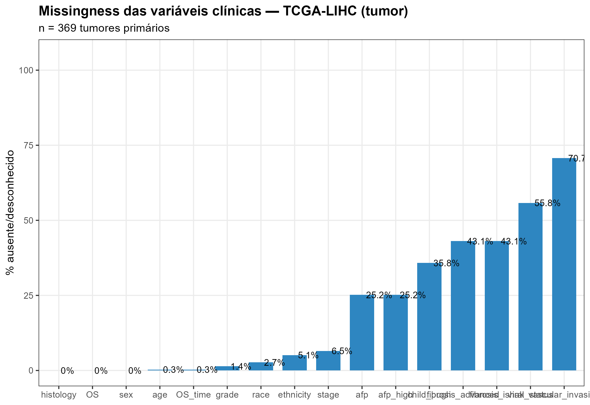
Figura 16. Percentual de valores ausentes/desconhecidos nas variáveis clínicas dos 369 tumores primários TCGA.
| Variável | Ausente/desconhecido | % |
|---|---|---|
| Invasão vascular | 261 | 70,7 |
| Sorologia viral | 206 | 55,8 |
| Fibrose (Ishak) | 159 | 43,1 |
| Fibrose avançada | 159 | 43,1 |
| Child-Pugh | 132 | 35,8 |
| AFP | 93 | 25,2 |
| AFP ≥400 | 93 | 25,2 |
| Estágio | 24 | 6,5 |
| Etnia | 19 | 5,1 |
| Raça | 10 | 2,7 |
| Grau | 5 | 1,4 |
| Idade | 1 | 0,3 |
| OS/time | 1 | 0,3 |
| Sexo, histologia | 0 | 0 |
Implicação: as análises de AFP, fibrose, Child-Pugh, vírus e invasão vascular têm poder limitado e podem sofrer viés de seleção (amostras com informação disponível podem não ser representativas).
A tabela completa está em
resultados/tabelas/14_fenotipos_testes.csv (24 testes, com p nominal, p
ajustado por BH e V de Cramér). Para as variáveis vírus e raça, a
categoria Unknown foi excluída dos testes, pois não representa um grupo
biológico.
| Associação | n | Teste | p | V de Cramér |
|---|---|---|---|---|
| Child-Pugh × estágio | 345 | Qui-quadrado | 5,5 × 10⁻⁸ | 0,293 |
| log2(AFP+1) × grau | 275 | Wilcoxon | 4,3 × 10⁻⁶ | — |
| AFP ≥400 × grau | 275 | Qui-quadrado | 2,0 × 10⁻⁵ | 0,257 |
| Raça × grau (Unknown excluído) | 355 | Fisher | 1,0 × 10⁻⁴ | 0,251 |
| Idade × grau | 363 | Wilcoxon | 4,9 × 10⁻³ | — |
| log2(AFP+1) × sexo | 276 | Wilcoxon | 5,4 × 10⁻³ | — |
| Fibrose Ishak × estágio | 199 | Wilcoxon | 6,7 × 10⁻³ | — |
| Vírus × grau (Unknown excluído) | 161 | Qui-quadrado | 1,1 × 10⁻² | 0,236 |
| AFP ≥400 × estágio | 263 | Qui-quadrado | 1,4 × 10⁻² | 0,152 |
| Fibrose avançada × estágio | 199 | Qui-quadrado | 1,4 × 10⁻² | 0,174 |
| Vírus × estágio (Unknown excluído) | 156 | Qui-quadrado | 1,4 × 10⁻² | 0,233 |
Interpretação:
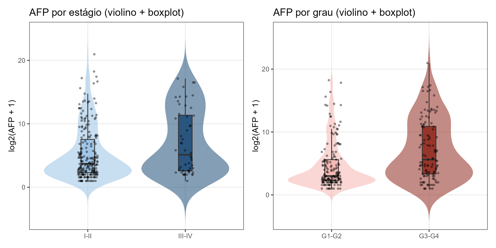
Figura 15. log2(AFP + 1) por estágio agrupado e por grau agrupado (violino + boxplot).
Medianas de AFP (ng/mL):
| Subgrupo | n | Mediana | Q1–Q3 |
|---|---|---|---|
| Estágio I–II | 211 | 12,0 | 4,0–188,5 |
| Estágio III–IV | 52 | 34,5 | 5,0–2.628,8 |
| Grau G1–G2 | 162 | 7,0 | 4,0–47,8 |
| Grau G3–G4 | 113 | 48,0 | 9,0–1.902,0 |
| Feminino | 91 | 28,0 | 6,0–805,0 |
| Masculino | 185 | 11,0 | 4,0–120,0 |
A média de AFP é muito inflada por outliers (por exemplo, média de 14.622 ng/mL no estágio I–II), por isso a interpretação usa mediana e log2(AFP+1).
Foram usados 363 tumores com OS_time > 0 e OS informado; 128 eventos.
| Variável | n | Eventos | log-rank p |
|---|---|---|---|
| Estágio (I–II vs. III–IV) | 339 | 114 | 5,18 × 10⁻⁷ |
| Grau (G1–G2 vs. G3–G4) | 358 | 124 | 0,682 |
| Sexo | 363 | 128 | 0,288 |
| Idade (≥65 vs. <65) | 363 | 128 | 0,244 |
| AFP (≥400 vs. <400) | 274 | 82 | 0,941 |
| Fibrose avançada (Ishak ≥5) | 207 | 62 | 0,428 |
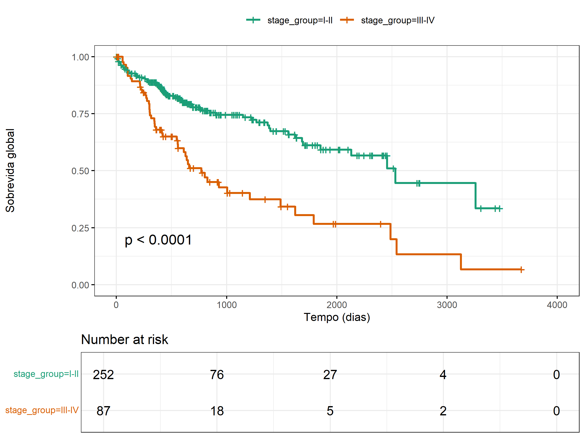
Figura 17. Sobrevida global por estágio.
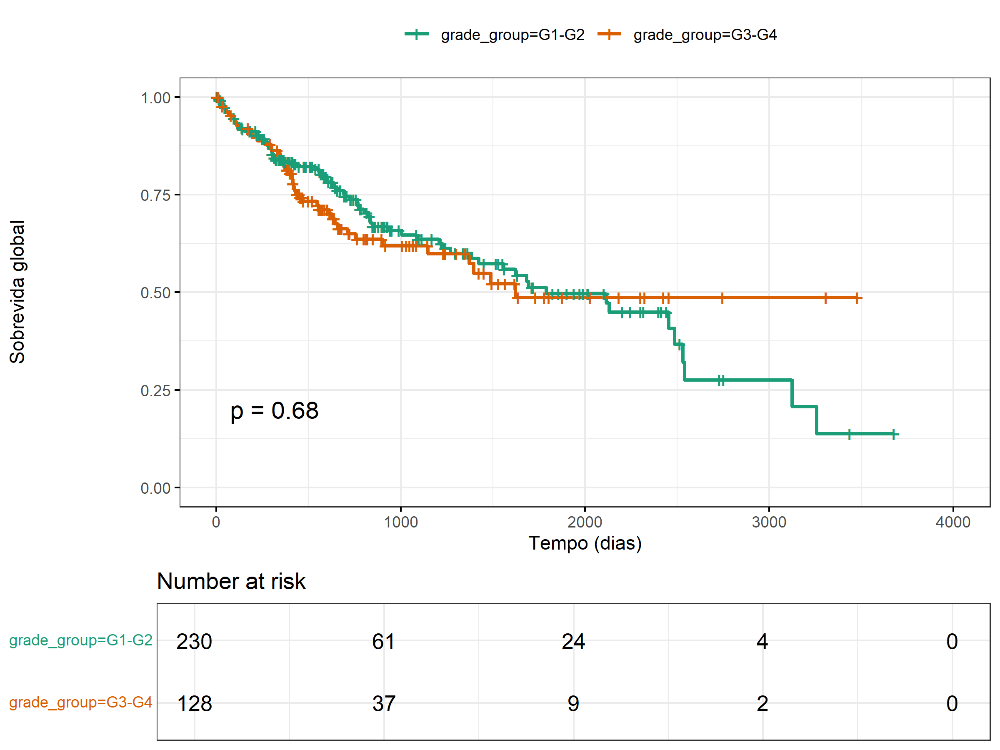
Figura 18. Sobrevida global por grau.
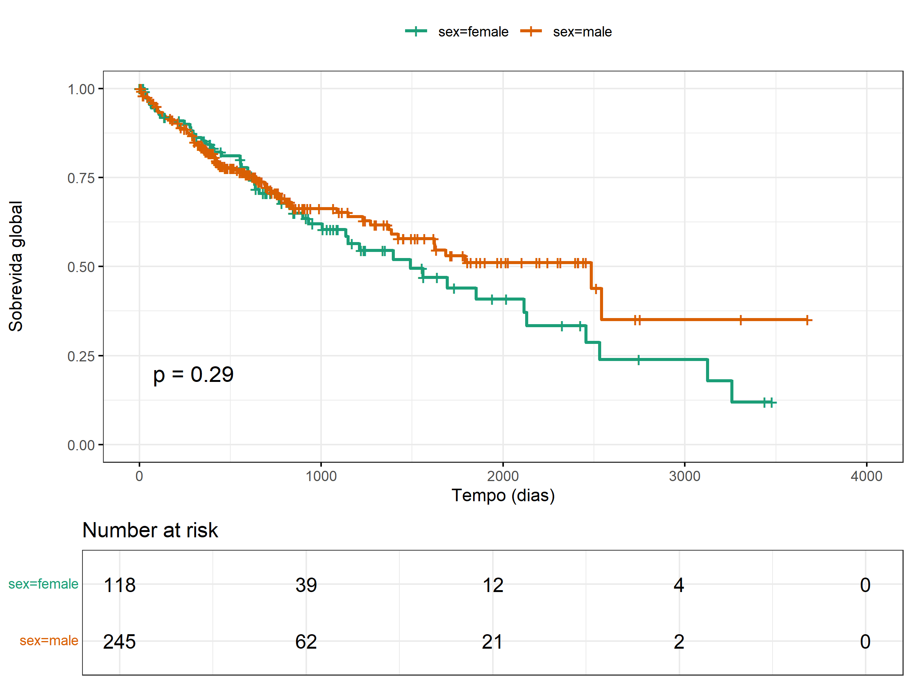
Figura 19. Sobrevida global por sexo.
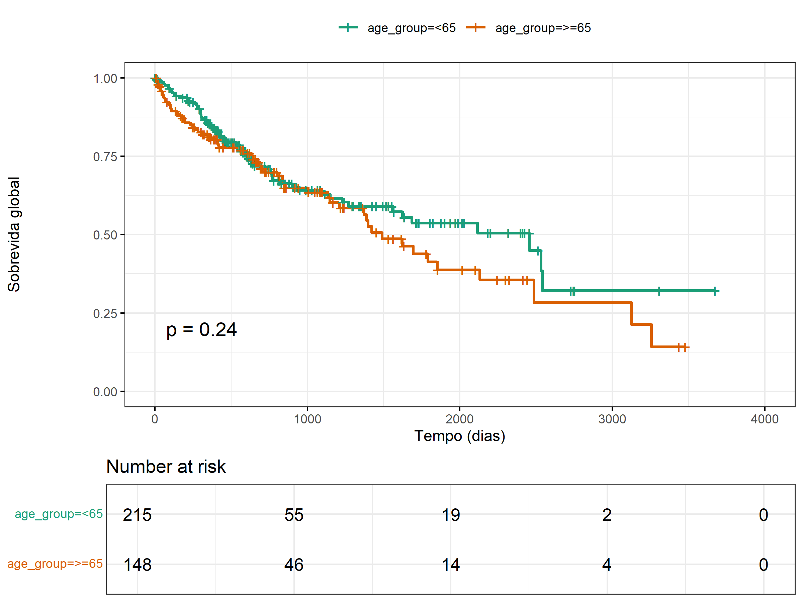
Figura 20. Sobrevida global por idade.
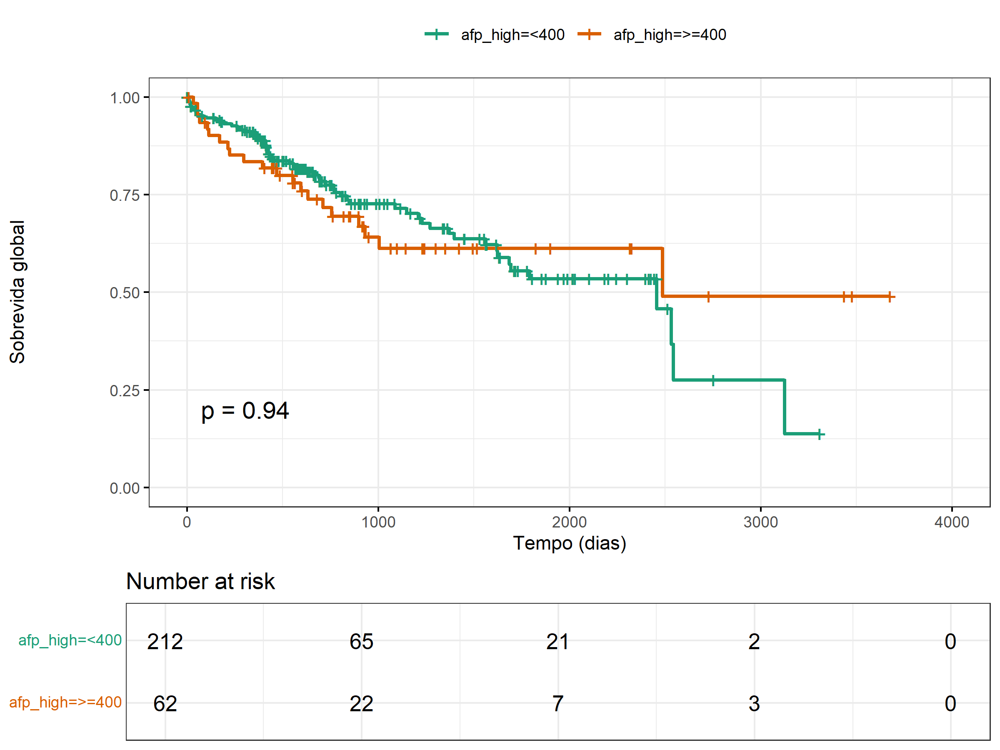
Figura 21. Sobrevida global por AFP.
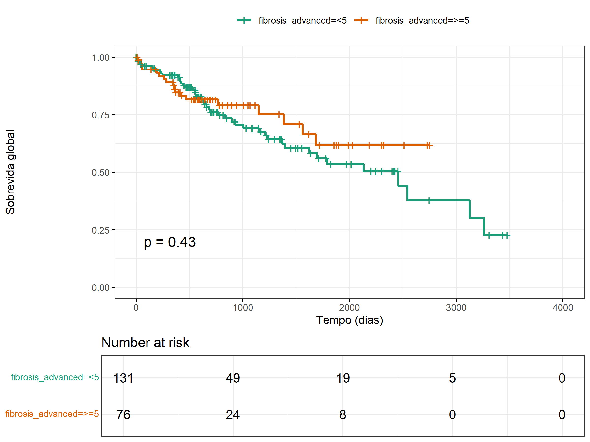
Figura 22. Sobrevida global por fibrose.
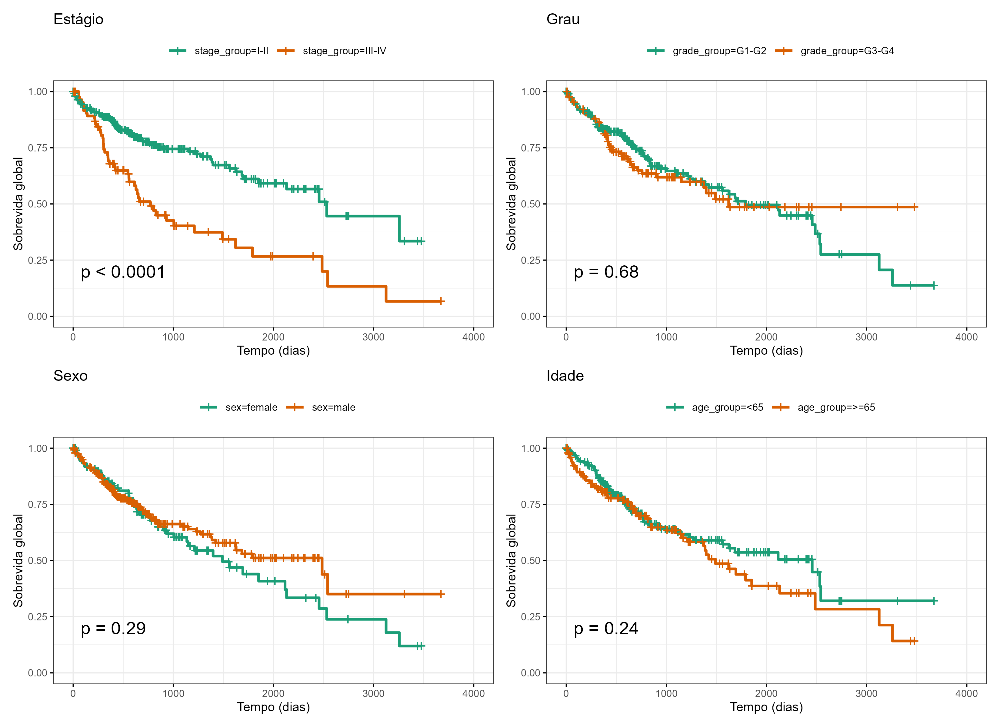
Figura 23. Painel comparativo das curvas de estágio, grau, sexo e idade.
Interpretação: apenas o estágio separou claramente as curvas de sobrevida. A ausência de significância para grau, AFP e fibrose pode refletir tanto ausência de efeito prognóstico independente quanto perda de poder por missingness e heterogeneidade.
A tabela completa está em resultados/tabelas/17_cox_univariado.csv.
| Variável | HR (IC 95%) | p |
|---|---|---|
| Estágio III–IV vs. I–II | 2,52 (1,73–3,66) | 1,2 × 10⁻⁶ |
| Grau G3–G4 vs. G1–G2 | 1,08 (0,75–1,55) | 0,682 |
| Sexo masculino vs. feminino | 0,82 (0,58–1,18) | 0,290 |
| Idade (por ano) | 1,012 (0,998–1,026) | 0,094 |
| AFP ≥400 vs. <400 | 1,02 (0,62–1,68) | 0,939 |
| Fibrose avançada vs. não | 0,80 (0,46–1,39) | 0,429 |
| Vírus HBV vs. nenhum/outro | 0,44 (0,25–0,76) | 3,1 × 10⁻³ |
| Vírus HCV vs. nenhum/outro | 0,57 (0,24–1,34) | 0,196 |
| Child-Pugh B–C vs. A | 2,36 (1,67–3,35) | 1,5 × 10⁻⁶ |
Atenção: o HR de HBV <1 no modelo univariado pode refletir confundimento por estágio, função hepática e vigilância (diagnóstico mais precoce em pacientes com HBV), e não um efeito protetor causal. O termo HBV+HCV não foi estimável (ausência de eventos suficientes em uma das categorias). No modelo multivariado, que não inclui vírus, o estágio permanece dominante.
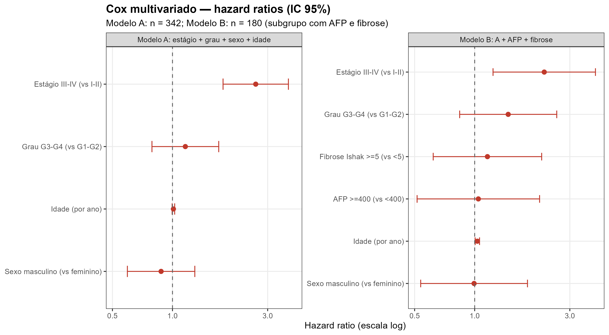
Figura 24. Hazard ratios do Cox multivariado (Modelos A e B).
n = 337; 112 eventos.
| Termo | HR (IC 95%) | p |
|---|---|---|
| Estágio III–IV vs. I–II | 2,61 (1,79–3,81) | 6,0 × 10⁻⁷ |
| Grau G3–G4 vs. G1–G2 | 1,16 (0,79–1,71) | 0,450 |
| Sexo masculino vs. feminino | 0,88 (0,59–1,29) | 0,508 |
| Idade (por ano) | 1,011 (0,996–1,026) | 0,155 |
n = 179; 52 eventos.
| Termo | HR (IC 95%) | p |
|---|---|---|
| Estágio III–IV vs. I–II | 2,23 (1,24–4,03) | 7,7 × 10⁻³ |
| Grau G3–G4 vs. G1–G2 | 1,47 (0,84–2,58) | 0,176 |
| Sexo masculino vs. feminino | 0,99 (0,54–1,84) | 0,983 |
| Idade (por ano) | 1,031 (1,006–1,058) | 0,0165 |
| AFP ≥400 vs. <400 | 1,04 (0,51–2,12) | 0,907 |
| Fibrose avançada vs. não | 1,16 (0,62–2,17) | 0,645 |
Interpretação: o estágio é o preditor independente mais forte. O grau perde significância após ajuste pelo estágio. No Modelo B, a idade aparece como fator independente (HR ≈ 1,03 por ano), mas o modelo tem apenas 52 eventos e n = 179; o achado é frágil. AFP e fibrose não foram independentes após ajuste.
cox.zph)| Modelo | Termo | χ² | p |
|---|---|---|---|
| A | Estágio | 0,53 | 0,465 |
| A | Grau | 0,43 | 0,514 |
| A | Sexo | 2,70 | 0,100 |
| A | Idade | 0,39 | 0,532 |
| A | GLOBAL | 4,15 | 0,386 |
| B | Estágio | 2,17 | 0,141 |
| B | Grau | 0,86 | 0,355 |
| B | Sexo | 1,39 | 0,238 |
| B | Idade | 0,09 | 0,758 |
| B | AFP | 3,88 | 0,049 |
| B | Fibrose | 2,07 | 0,150 |
| B | GLOBAL | 9,38 | 0,153 |
Não há evidência global de violação da suposição de riscos proporcionais. AFP no Modelo B está no limite (p = 0,049), o que merece cautela.
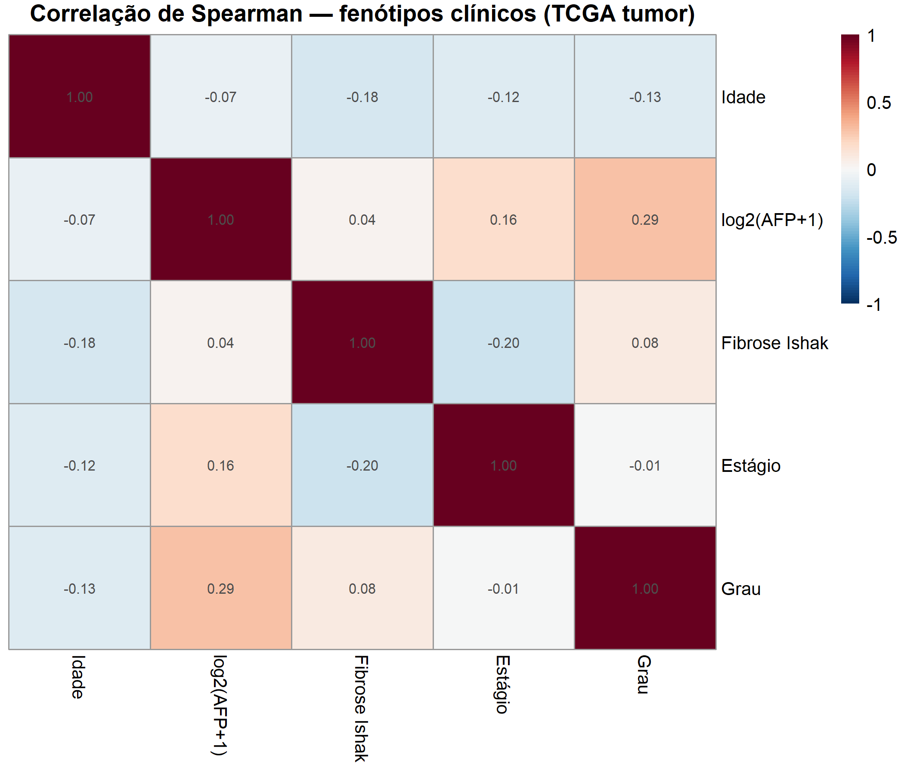
Figura 25. Correlações de Spearman entre idade, AFP, fibrose, estágio e grau.
| Par | ρ | p | n |
|---|---|---|---|
| AFP × grau | 0,292 | 8,6 × 10⁻⁷ | 275 |
| AFP × estágio | 0,162 | 0,0083 | 263 |
| Fibrose × estágio | −0,205 | 0,0038 | 199 |
| Idade × grau | −0,131 | 0,0126 | 363 |
| Idade × estágio | −0,122 | 0,0235 | 344 |
| Idade × fibrose | −0,176 | 0,0109 | 209 |
| Fibrose × grau | 0,083 | 0,231 | 208 |
| Estágio × grau | −0,009 | 0,875 | 343 |
Interpretação: AFP e grau compartilham parte da variação; fibrose e estágio são inversamente correlacionados (possivelmente porque pacientes com cirrose avançada são diagnosticados em estágios diferentes ou têm maior mortalidade competitiva). A correlação estágio × grau é praticamente nula, sugerindo que eles capturam dimensões parcialmente distintas.
Arquivo:
docs/09_auditorias_benchmarks.md. Scripts:scripts/10_auditoria_dados_e_volcano.R,scripts/11_benchmarks.R,scripts/12_compliance.R. Relatórios:auditorias/.
Relatório completo: auditorias/AUDITORIA_DADOS.md.
Foram verificados:
-02;Resultado: 22 verificações; todas OK, exceto o alerta de confundimento estrutural (Cramér's V = 1). Não há NAs, infinitos, genes duplicados ou amostras dessincronizadas na matriz.
Missingness clínico (TCGA tumor): invasão vascular 70,7%, sorologia viral 55,8%, fibrose 43,1%, Child-Pugh 35,8%, AFP 25,2%, estágio 6,5%, grau 1,4%, idade 0,3%.
Volcano_12Relatório completo:
auditorias/AUDITORIA_VOLCANO_12.md.
Queixa: a figura parecia vazia.
Diagnóstico: a imagem original não estava tecnicamente em branco (≈3,65% de pixels não brancos), mas o ComBat sem covariável deixou apenas 1 DEG (LINC01419). Os outros 12.400 genes ficaram amontoados perto da origem, tornando o painel visualmente vazio.
Causa raiz: lote (TCGA/GTEx) e condição (tumor/normal) são perfeitamente
confundidos; o ComBat removeu também a diferença biológica. A tentativa com
mod = ~ grupo é recusada pelo próprio ComBat.
Correção: a figura passou a ter dois painéis — antes (3.388 DEGs) e depois (1 DEG) —, com escala livre, rótulo de LINC01419 e subtítulo com as contagens. A versão corrigida tem ≈9,48% de pixels não brancos.
Relatório completo: auditorias/BENCHMARKS.md.
| Etapa | Tempo | Observação |
|---|---|---|
| Carga de metadados + matriz | 1,5 s | 12.401 genes × 529 amostras |
| Memória da matriz | 53,3 MB | matriz numérica |
| UMAP (2.000 genes) | 4,34 s | n_neighbors=30, min_dist=0,25 |
| limma com covariáveis | 0,69 s | 12.401 genes × 478 amostras |
| limma sem covariáveis | 0,26 s | mesmo contraste |
limma com trend = FALSE |
0,47 s | sensibilidade |
Conclusão: o custo dominante é a leitura da matriz e a geração de figuras;
o limma é rápido para esta escala.
| Comparação | Métrica | Valor |
|---|---|---|
| Com vs. sem covariáveis | DEGs com / sem | 3.388 / 3.316 |
| Com vs. sem covariáveis | Jaccard | 0,948 |
| Com vs. sem covariáveis | ρ de logFC | 0,999 |
trend = TRUE vs. FALSE |
DEGs | 3.388 / 3.389 |
trend = TRUE vs. FALSE |
Jaccard | 1,000 |
| FDR apenas vs. FDR + |logFC| | genes | 10.109 / 3.388 |
| FDR apenas vs. FDR + |logFC| | Jaccard | 0,335 |
| Pareado vs. não pareado | DEGs | 3.710 / 4.130 |
| Pareado vs. não pareado | Jaccard | 0,764 |
| Pareado vs. não pareado | ρ de logFC | 0,969 |
| ComBat antes vs. depois | DEGs | 3.388 / 1 |
| ComBat antes vs. depois | Jaccard | 0,000 |
| ComBat antes vs. depois | ρ de logFC | 0,647 |
Interpretação:
trend = TRUE e FALSE produzem essencialmente o mesmo conjunto.Relatório completo:
auditorias/COMPLIANCE.md.
Critérios:
resultados/figuras;Volcano_12 com conteúdo visual mínimo;O resultado detalhado é gerado automaticamente por
scripts/12_compliance.R e salvo em auditorias/COMPLIANCE.md.
set.seed(2026) em UMAP, volcano e fenótipos.uwot::umap com n_threads = 1 e n_sgd_threads = 1 para maior
determinismo.docs/sessionInfo.txt.docs/07_reproducibilidade.md.run_all.R executa 00 → 01 → 02 → 03 → 04 → 05 → 10 → 11 → 12.Arquivo:
docs/10_grupos_alternativos.md. Script:scripts/06_grupos_alternativos.R. Saídas:resultados/tabelas/21–22_*.csv,resultados/figuras/26–27_*.png.
Sim. Além de tumor primário, tecido adjacente e fígado normal GTEx, os dados contêm:
Recurrent Tumor, n = 2);O grupo mais “escondido” é o de recidivas: ele aparece no arquivo bruto, mas foi excluído da análise principal. Os subtipos histológicos e os grupos virais são grupos biológicos reais, mas pequenos ou com missingness elevado.
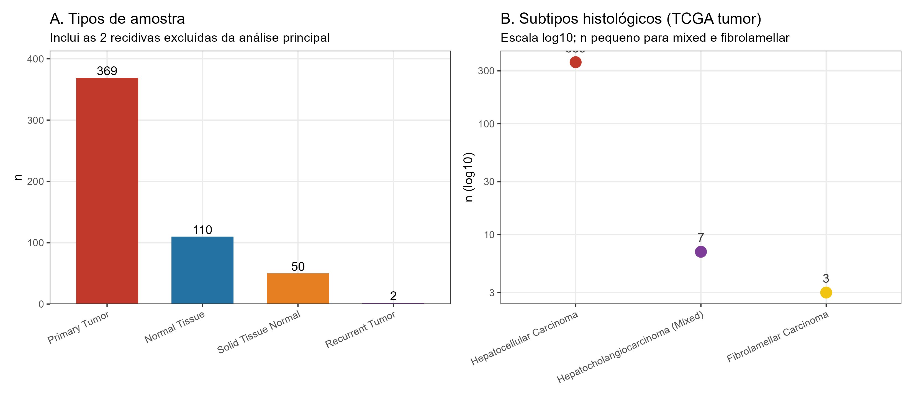
Figura 26. (A) Tipos de amostra, incluindo as 2 recidivas. (B) Subtipos histológicos no TCGA tumor (escala log10).
| Categoria | Grupo | n | % |
|---|---|---|---|
| Tipo de amostra | Tumor primário | 369 | 69,5 |
| Tipo de amostra | Tecido adjacente | 50 | 9,4 |
| Tipo de amostra | GTEx normal | 110 | 20,7 |
| Tipo de amostra | Recidiva | 2 | 0,4 |
| Histologia (TCGA tumor) | HCC clássico | 359 | 97,3 |
| Histologia (TCGA tumor) | Hepatocolangiocarcinoma misto | 7 | 1,9 |
| Histologia (TCGA tumor) | Fibrolamelar | 3 | 0,8 |
| Sorologia viral (TCGA tumor) | HBV | 59 | 16,0 |
| Sorologia viral (TCGA tumor) | HCV | 19 | 5,1 |
| Sorologia viral (TCGA tumor) | HBV+HCV | 85 | 23,0 |
| Sorologia viral (TCGA tumor) | Unknown | 206 | 55,8 |
Além disso, há 38 centros TCGA (TSS); o maior é DD (n = 144; 39,0% dos
tumores), seguido de CC e G3 (n = 32 cada). Isso é relevante como possível
fonte de efeito de lote técnico, embora não tenha sido usado como covariável
nas análises principais.
As 2 amostras TCGA-DD-AACA-02 e TCGA-ZS-A9CF-02 são tumores
recidivados, não primários. Foram excluídas porque:
Elas estão mantidas em metadata_amostras.tsv para auditoria, mas não em
metadata_analise.tsv.
O TCGA-LIHC contém, além do HCC clássico:
Com n = 7 e n = 3, não é adequado rodar expressão diferencial inferencial contra o HCC clássico. A análise é descritiva.
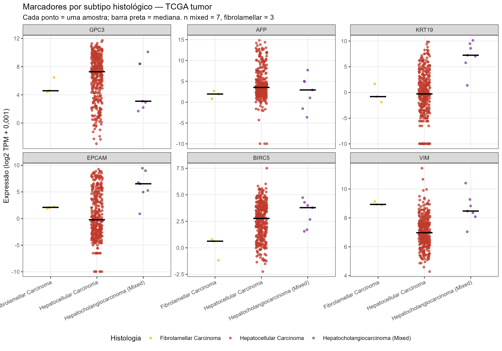
Figura 27. Expressão de marcadores por subtipo histológico. Cada ponto é uma amostra; a barra preta é a mediana. Interpretar com cautela devido ao n pequeno.
Medianas de expressão (log2 TPM + 0,001):
| Gene | HCC clássico (n = 359) | Misto (n = 7) | Fibrolamelar (n = 3) |
|---|---|---|---|
| GPC3 | 7,28 | 3,10 | 4,58 |
| AFP | 3,53 | 2,93 | 1,95 |
| KRT19 | −0,28 | 7,24 | −0,81 |
| EPCAM | −0,23 | 6,53 | 2,10 |
| BIRC5 | 2,77 | 3,79 | 0,62 |
| VIM | 6,98 | 8,48 | 8,94 |
Interpretação descritiva:
A sorologia viral disponível no TCGA mostra:
O grupo Unknown é grande e não deve ser interpretado como “sem infecção”.
Nas análises de fenótipos, a categoria Unknown foi excluída dos testes de
associação e do Cox univariado. A etiologia viral pode ser usada como
estratificação em análises futuras, mas o missingness limita o poder.
Os 38 centros TCGA são um grupo técnico, não biológico. O centro DD
contribui com 39% dos tumores; centros com n = 1–3 são muitos. Isso pode gerar
efeito de lote. Não aplicamos ComBat por TSS porque:
Ainda assim, o TSS é um candidato natural para análises de sensibilidade futuras (por exemplo, incluí-lo como efeito aleatório ou corrigir apenas centros com n ≥ 10).
| Grupo | n | Pode ser analisado? |
|---|---|---|
| Tumor primário | 369 | Sim (principal) |
| Tecido adjacente | 50 | Sim (principal) |
| GTEx normal | 110 | Sim (principal) |
| Recidiva | 2 | Não (descritivo/apenas auditoria) |
| HCC clássico | 359 | Sim |
| Misto | 7 | Apenas descritivo |
| Fibrolamelar | 3 | Apenas descritivo |
| HBV / HCV / HBV+HCV | 59 / 19 / 85 | Possível, com cautela |
| Unknown viral | 206 | Excluído dos testes |
| TSS | 38 centros | Efeito técnico; não usado |